Listening Stage 1 — 72 Tests / 288 Parts / 568 groups
Exact current resolver output. Original audit remains unchanged. Thumbnails are overview aids, not a complete readability PASS.
{
"tests": 72,
"parts": 288,
"groups": 568,
"duplicate_pairs": {
"before": 86,
"after": 0
},
"order_inversions": {
"before": 9,
"after": 0
},
"wrong_part": {
"before": 1,
"after": 0
},
"missing_required_images": 0,
"legacy_duplicate_pairs": 0,
"changed_image_bytes": 0,
"additional_reviewed_pairs": 22,
"additional_duplicate_pairs_after": 0,
"stage2": {
"damaged_crops": 26,
"suspected_crops": 21,
"displayed_damaged_crops": 0,
"displayed_suspected_crops": 0,
"status": "physical files unchanged; alternate full pages selected where available"
}
}cambridge-04-test-01 / Part 1
Q1–4: asset-5d5797fc540a
Q5–10: asset-6fdc69064206
 Cambridge_IELTS_04/Cambridge_IELTS_04_Listening_Complete/Images/Test_1_Section_1_PDF_Page_001_NOTES_ON_SOCIAL_PROGERAMME.png
Cambridge_IELTS_04/Cambridge_IELTS_04_Listening_Complete/Images/Test_1_Section_1_PDF_Page_001_NOTES_ON_SOCIAL_PROGERAMME.png
asset-5d5797fc540a6809abe3cc84e3e4b1c331f4c3a9be431d8bbe0984509705afca Cambridge_IELTS_04/Cambridge_IELTS_04_Listening_Complete/Images/Test_1_Section_1_PDF_Page_002_WEEKEND_TRIPS_TABLE.png
Cambridge_IELTS_04/Cambridge_IELTS_04_Listening_Complete/Images/Test_1_Section_1_PDF_Page_002_WEEKEND_TRIPS_TABLE.png
asset-6fdc69064206de9950014eabdb5a957550ff8cf3e344ffd3e8b18c5c64c989c9cambridge-04-test-01 / Part 2
Q11–13: asset-cf6f3bb8fe7b
Q14–20: asset-cf6f3bb8fe7b
 Cambridge_IELTS_04/Cambridge_IELTS_04_Listening_Complete/Images/Test_1_Section_2_PDF_Page_004_RIVERSIDE_INDUSTRIAL_VILLAGE_MAP.png
Cambridge_IELTS_04/Cambridge_IELTS_04_Listening_Complete/Images/Test_1_Section_2_PDF_Page_004_RIVERSIDE_INDUSTRIAL_VILLAGE_MAP.png
asset-cf6f3bb8fe7b194730fbcd8f88aa9de8caea2e2dc826216be5218c611b30f3cdcambridge-04-test-01 / Part 3
Q21–22: asset-d82ace27fb8d
Q23–27: asset-d82ace27fb8d
Q28–30: asset-d82ace27fb8d
 Cambridge_IELTS_04/Cambridge_IELTS_04_Listening_Complete/Images/Test_1_Section_3_PDF_Page_007_POPULATION_STUDIES_BAR_CHART.png
Cambridge_IELTS_04/Cambridge_IELTS_04_Listening_Complete/Images/Test_1_Section_3_PDF_Page_007_POPULATION_STUDIES_BAR_CHART.png
asset-d82ace27fb8d9e15330a215924aacdd31ebc8b8ef340b341d72c342a771d3944cambridge-04-test-01 / Part 4
Q31–40: asset-46cf8087c6b2
 backend/scripts/listening_dataset/sources/cambridge-04-test-01-part-4.png
backend/scripts/listening_dataset/sources/cambridge-04-test-01-part-4.png
asset-46cf8087c6b2ecfce5c5cd182c3328477f898859e46ae4c65201c3fbcdfae06ecambridge-04-test-02 / Part 1
Q1–5: asset-84bac2919550
Q6–8: asset-84bac2919550
Q9–10: asset-84bac2919550
 Cambridge_IELTS_04/Cambridge_IELTS_04_Listening_Complete/Images/Test_2_Section_1_PDF_Page_033_SAMPLE_MULTIPLE_CHOICE_FORMAT.png
Cambridge_IELTS_04/Cambridge_IELTS_04_Listening_Complete/Images/Test_2_Section_1_PDF_Page_033_SAMPLE_MULTIPLE_CHOICE_FORMAT.png
asset-84bac291955080a49aa247d5350e74717c38cac0ea1b56b36f0d3fdc83d80798cambridge-04-test-02 / Part 2
Q11–20:
cambridge-04-test-02 / Part 3
Q21–24: asset-91e55ddd2a08
Q25–26: asset-91e55ddd2a08
Q27–30: asset-cdd9305f124a
 Cambridge_IELTS_04/Cambridge_IELTS_04_Listening_Complete/Images/Test_2_Section_3_PDF_Page_038_DETAILS_OF_ASSIGNMENT_FORM.png
Cambridge_IELTS_04/Cambridge_IELTS_04_Listening_Complete/Images/Test_2_Section_3_PDF_Page_038_DETAILS_OF_ASSIGNMENT_FORM.png
asset-91e55ddd2a082a1f55c8c62a41092a700a9bd0b7a0c8538267017ba67d00a89b Cambridge_IELTS_04/Cambridge_IELTS_04_Listening_Complete/Images/Test_2_Section_3_PDF_Page_039_ASSIGNMENT_BIBLIOGRAPHY_TABLE.png
Cambridge_IELTS_04/Cambridge_IELTS_04_Listening_Complete/Images/Test_2_Section_3_PDF_Page_039_ASSIGNMENT_BIBLIOGRAPHY_TABLE.png
asset-cdd9305f124af2e56abca78f003b0d71317fe0bd8b5419eb0fb506312dab8c7bcambridge-04-test-02 / Part 4
Q31–32: asset-6ad46291e139
Q33–38: asset-6ad46291e139
Q39–40: asset-6ad46291e139
 Cambridge_IELTS_04/Cambridge_IELTS_04_Listening_Complete/Images/Test_2_Section_4_PDF_Page_041_CORPORATE_CRIME_NOTES.png
Cambridge_IELTS_04/Cambridge_IELTS_04_Listening_Complete/Images/Test_2_Section_4_PDF_Page_041_CORPORATE_CRIME_NOTES.png
asset-6ad46291e13941cb25efd9592b32289e803e81bfa41e7977925580f00c5d2ce2cambridge-04-test-03 / Part 1
Q1–4: asset-cac1df85e6a9
Q5–7: asset-cac1df85e6a9
Q8–10: asset-cac1df85e6a9
 Cambridge_IELTS_04/Cambridge_IELTS_04_Listening_Complete/Images/Test_3_Section_1_PDF_Page_064_ACCOMMODATION_REQUEST_FORM.png
Cambridge_IELTS_04/Cambridge_IELTS_04_Listening_Complete/Images/Test_3_Section_1_PDF_Page_064_ACCOMMODATION_REQUEST_FORM.png
asset-cac1df85e6a9f4f4369fc9c0ef89f44729a905075146132b4a5c1c5306646908cambridge-04-test-03 / Part 2
Q11–14: asset-4ea40a41dd28
Q15–20: asset-4ea40a41dd28
 Cambridge_IELTS_04/Cambridge_IELTS_04_Listening_Complete/Images/Test_3_Section_2_PDF_Page_067_CIRCUS_PERFORMANCE_TABLE.png
Cambridge_IELTS_04/Cambridge_IELTS_04_Listening_Complete/Images/Test_3_Section_2_PDF_Page_067_CIRCUS_PERFORMANCE_TABLE.png
asset-4ea40a41dd284f795640c14422c4a5cbb976779c02037be853360b006e92be54cambridge-04-test-03 / Part 3
Q21–25:
Q26–30:
cambridge-04-test-03 / Part 4
Q31–32: asset-9315de6a0800
Q33–37: asset-9315de6a0800 → asset-f67fe4e6288c
Q38–38: asset-f67fe4e6288c
Q39–39:
Q40–40:
 Cambridge_IELTS_04/Cambridge_IELTS_04_Listening_Complete/Images/Test_3_Section_4_PDF_Page_071_NEW_UNION_BUILDING_NOTES.png
Cambridge_IELTS_04/Cambridge_IELTS_04_Listening_Complete/Images/Test_3_Section_4_PDF_Page_071_NEW_UNION_BUILDING_NOTES.png
asset-9315de6a08003966fc0ea249fc7b0f932408ee7ed565c618a315d93971f6daad Cambridge_IELTS_04/Cambridge_IELTS_04_Listening_Complete/Images/Test_3_Section_4_PDF_Page_072_CHOICE_OF_SITE_TABLE.png
Cambridge_IELTS_04/Cambridge_IELTS_04_Listening_Complete/Images/Test_3_Section_4_PDF_Page_072_CHOICE_OF_SITE_TABLE.png
asset-f67fe4e6288c1de06836ed9883b7c911da421256199663e6dec32ba1d37ba630cambridge-04-test-04 / Part 1
Q1–10: asset-b4c39457d4fb → asset-eca7349c8c56
 Cambridge_IELTS_04/Cambridge_IELTS_04_Listening_Complete/Images/Test_4_Section_1_PDF_Page_098_GOODBYE_PARTY_NOTES_1.png
Cambridge_IELTS_04/Cambridge_IELTS_04_Listening_Complete/Images/Test_4_Section_1_PDF_Page_098_GOODBYE_PARTY_NOTES_1.png
asset-b4c39457d4fbb547a7f489d81e824818b0a6423d396b2cc3b8fba3295e174b25 Cambridge_IELTS_04/Cambridge_IELTS_04_Listening_Complete/Images/Test_4_Section_1_PDF_Page_099_GOODBYE_PARTY_NOTES_2.png
Cambridge_IELTS_04/Cambridge_IELTS_04_Listening_Complete/Images/Test_4_Section_1_PDF_Page_099_GOODBYE_PARTY_NOTES_2.png
asset-eca7349c8c56dea021b40b19ef2990e35caae2fa17cec8354e3a8ca990718c76cambridge-04-test-04 / Part 2
Q11–15: asset-266397e7c082
Q16–20: asset-266397e7c082
 Cambridge_IELTS_04/Cambridge_IELTS_04_Listening_Complete/Images/Test_4_Section_2_PDF_Page_101_HOLIDAY_COSTS_TABLE.png
Cambridge_IELTS_04/Cambridge_IELTS_04_Listening_Complete/Images/Test_4_Section_2_PDF_Page_101_HOLIDAY_COSTS_TABLE.png
asset-266397e7c082ebaf36bbe83d1b5c3d7ab0720e6bad5b45a4c7cb8529b83db48fcambridge-04-test-04 / Part 3
Q21–26: asset-7203d3f9aba8
Q27–30: asset-7203d3f9aba8
 Cambridge_IELTS_04/Cambridge_IELTS_04_Listening_Complete/Images/Test_4_Section_3_PDF_Page_102_EXPERIMENTS_TABLE.png
Cambridge_IELTS_04/Cambridge_IELTS_04_Listening_Complete/Images/Test_4_Section_3_PDF_Page_102_EXPERIMENTS_TABLE.png
asset-7203d3f9aba872d70a43b79e40ab526d6458205b037dfe3cd97cf27c24097f11cambridge-04-test-04 / Part 4
Q31–34: asset-4d0a53b4ad01
Q35–38: asset-4d0a53b4ad01
Q39–40: asset-4d0a53b4ad01
 Cambridge_IELTS_04/Cambridge_IELTS_04_Listening_Complete/Images/Test_4_Section_4_PDF_Page_104_SHARKS_IN_AUSTRALIA_NOTES.png
Cambridge_IELTS_04/Cambridge_IELTS_04_Listening_Complete/Images/Test_4_Section_4_PDF_Page_104_SHARKS_IN_AUSTRALIA_NOTES.png
asset-4d0a53b4ad01e67f11ccaba0476c075d99327e4a9be8c5f3868d28c5e26774ddcambridge-05-test-01 / Part 1
Q1–4: asset-0d7083daf984
Q5–6: asset-0d7083daf984 → asset-5e06a6915b14
Q7–10: asset-5e06a6915b14
 Cambridge_IELTS_05/Cambridge_IELTS_05_Listening_Complete/images/Test_1_Section_1_PDF_Page_011.jpg
Cambridge_IELTS_05/Cambridge_IELTS_05_Listening_Complete/images/Test_1_Section_1_PDF_Page_011.jpg
asset-0d7083daf984f67cc1c9a5c193ee897d7728c4320b6e87138280551eaff169c8 Cambridge_IELTS_05/Cambridge_IELTS_05_Listening_Complete/images/Test_1_Section_1_PDF_Page_012.jpg
Cambridge_IELTS_05/Cambridge_IELTS_05_Listening_Complete/images/Test_1_Section_1_PDF_Page_012.jpg
asset-5e06a6915b144a4d2c67ba335b9ceebafe2473c322cacd083b762f34df1c2b48cambridge-05-test-01 / Part 2
Q11–19: asset-424e3b0e04b7
Q20–20: asset-424e3b0e04b7
 Cambridge_IELTS_05/Cambridge_IELTS_05_Listening_Complete/images/Test_1_Section_2_PDF_Page_013.jpg
Cambridge_IELTS_05/Cambridge_IELTS_05_Listening_Complete/images/Test_1_Section_2_PDF_Page_013.jpg
asset-424e3b0e04b70a3f77be474e53b327d4887621ca3c391d828b84a7e56ad2045bcambridge-05-test-01 / Part 3
Q21–23: asset-c50b6517d80c
Q24–25: asset-c50b6517d80c
Q26–30: asset-2e684c3b4e4c
 Cambridge_IELTS_05/Cambridge_IELTS_05_Listening_Complete/images/Test_1_Section_3_PDF_Page_014.jpg
Cambridge_IELTS_05/Cambridge_IELTS_05_Listening_Complete/images/Test_1_Section_3_PDF_Page_014.jpg
asset-c50b6517d80cfa56cb29d9766fa0495b63fcea0b1bd3b2d014e2dac210aea3b0 Cambridge_IELTS_05/Cambridge_IELTS_05_Listening_Complete/images/Test_1_Section_3_PDF_Page_015.jpg
Cambridge_IELTS_05/Cambridge_IELTS_05_Listening_Complete/images/Test_1_Section_3_PDF_Page_015.jpg
asset-2e684c3b4e4cf399b0104228f0e1a46e72687d75bf4dd4510c9f02a07ac69988cambridge-05-test-01 / Part 4
Q31–35: asset-1032e82bda64
Q36–40: asset-1032e82bda64
 Cambridge_IELTS_05/Cambridge_IELTS_05_Listening_Complete/images/Test_1_Section_4_PDF_Page_016.jpg
Cambridge_IELTS_05/Cambridge_IELTS_05_Listening_Complete/images/Test_1_Section_4_PDF_Page_016.jpg
asset-1032e82bda643fad6b2ce5b1120cbbec309299c570b1317e800cf8f19dfb4f5fcambridge-05-test-02 / Part 1
Q1–10: asset-0128cad01bee
 Cambridge_IELTS_05/Cambridge_IELTS_05_Listening_Complete/images/Test_2_Section_1_PDF_Page_033.jpg
Cambridge_IELTS_05/Cambridge_IELTS_05_Listening_Complete/images/Test_2_Section_1_PDF_Page_033.jpg
asset-0128cad01bee1e04f1ebcf3c7c5cc76e662994aede8d6431b5a013144794fa31cambridge-05-test-02 / Part 2
Q11–15: asset-ee901e6af5b8
Q16–17: asset-4119eb3cafa1
Q18–20: asset-4119eb3cafa1
 Cambridge_IELTS_05/Cambridge_IELTS_05_Listening_Complete/images/Test_2_Section_2_PDF_Page_034.jpg
Cambridge_IELTS_05/Cambridge_IELTS_05_Listening_Complete/images/Test_2_Section_2_PDF_Page_034.jpg
asset-ee901e6af5b80024f2378c27f9866bd8b32d67cea277a91d7d788f3fb0a5b084 Cambridge_IELTS_05/Cambridge_IELTS_05_Listening_Complete/images/Test_2_Section_2_PDF_Page_035.jpg
Cambridge_IELTS_05/Cambridge_IELTS_05_Listening_Complete/images/Test_2_Section_2_PDF_Page_035.jpg
asset-4119eb3cafa1db177a779bf4a006734e7410f0e81354e11f325ade8916b326dacambridge-05-test-02 / Part 3
Q21–30: asset-c4d1845b41ba
 Cambridge_IELTS_05/Cambridge_IELTS_05_Listening_Complete/images/Test_2_Section_3_PDF_Page_036.jpg
Cambridge_IELTS_05/Cambridge_IELTS_05_Listening_Complete/images/Test_2_Section_3_PDF_Page_036.jpg
asset-c4d1845b41bac0081a31c1bb236900f226a470040c081aa628f10f59db4abd78cambridge-05-test-02 / Part 4
Q31–40: asset-d2a15aa9a375 → asset-d98173fe9923
 Cambridge_IELTS_05/Cambridge_IELTS_05_Listening_Complete/images/Test_2_Section_4_PDF_Page_037.jpg
Cambridge_IELTS_05/Cambridge_IELTS_05_Listening_Complete/images/Test_2_Section_4_PDF_Page_037.jpg
asset-d2a15aa9a3753b49133f068624c2fbf58699494bb6394bed4a407aa04b4fc748 Cambridge_IELTS_05/Cambridge_IELTS_05_Listening_Complete/images/Test_2_Section_4_PDF_Page_038.jpg
Cambridge_IELTS_05/Cambridge_IELTS_05_Listening_Complete/images/Test_2_Section_4_PDF_Page_038.jpg
asset-d98173fe9923c3c488f0d9683b271d6f902a61fd2bdd73b1a2825a37c62b88d8cambridge-05-test-03 / Part 1
Q1–10: asset-c5aa08b18f41 → asset-0a9ece0c19f8
 Cambridge_IELTS_05/Cambridge_IELTS_05_Listening_Complete/images/Test_3_Section_1_PDF_Page_056.jpg
Cambridge_IELTS_05/Cambridge_IELTS_05_Listening_Complete/images/Test_3_Section_1_PDF_Page_056.jpg
asset-c5aa08b18f413170684b954b19a4163931f02a82a906d425e1f7d1ecbeb52a38 Cambridge_IELTS_05/Cambridge_IELTS_05_Listening_Complete/images/Test_3_Section_1_PDF_Page_057.jpg
Cambridge_IELTS_05/Cambridge_IELTS_05_Listening_Complete/images/Test_3_Section_1_PDF_Page_057.jpg
asset-0a9ece0c19f86461adeb5e963bdfc3f944c903220b4bc0ca3eda3fdbe97c2967cambridge-05-test-03 / Part 2
Q11–12: asset-1decd1de6515
Q13–15: asset-1decd1de6515
Q16–20: asset-14e70563ed61
 Cambridge_IELTS_05/Cambridge_IELTS_05_Listening_Complete/images/Test_3_Section_2_PDF_Page_058.jpg
Cambridge_IELTS_05/Cambridge_IELTS_05_Listening_Complete/images/Test_3_Section_2_PDF_Page_058.jpg
asset-1decd1de6515df4db621cd124b544857a633fd512ad9eb78c7ec0fa7dfdca4f8 Cambridge_IELTS_05/Cambridge_IELTS_05_Listening_Complete/images/Test_3_Section_2_PDF_Page_059.jpg
Cambridge_IELTS_05/Cambridge_IELTS_05_Listening_Complete/images/Test_3_Section_2_PDF_Page_059.jpg
asset-14e70563ed61f23e7c32fe7e149d401cf004a16ecc910f34f3df1bfd0e217dd7cambridge-05-test-03 / Part 3
Q21–30: asset-5e32f5d1dc2c
 Cambridge_IELTS_05/Cambridge_IELTS_05_Listening_Complete/images/Test_3_Section_3_PDF_Page_060.jpg
Cambridge_IELTS_05/Cambridge_IELTS_05_Listening_Complete/images/Test_3_Section_3_PDF_Page_060.jpg
asset-5e32f5d1dc2c367f36a3de70d05f34a79f4c1aa6939781e11a91e1505f7b9fc7cambridge-05-test-03 / Part 4
Q31–35: asset-0c6d9f11ca62
Q36–40: asset-c78cfcc68b5e
 Cambridge_IELTS_05/Cambridge_IELTS_05_Listening_Complete/images/Test_3_Section_4_PDF_Page_061.jpg
Cambridge_IELTS_05/Cambridge_IELTS_05_Listening_Complete/images/Test_3_Section_4_PDF_Page_061.jpg
asset-0c6d9f11ca62fac35fdf04b7c6e364871ca6b9646d7032a10646191a5a737b3c Cambridge_IELTS_05/Cambridge_IELTS_05_Listening_Complete/images/Test_3_Section_4_PDF_Page_062.jpg
Cambridge_IELTS_05/Cambridge_IELTS_05_Listening_Complete/images/Test_3_Section_4_PDF_Page_062.jpg
asset-c78cfcc68b5e42eca2cfd2f88496a16dec48d99b1eab27611ac81d9ac0f6e5a6cambridge-05-test-04 / Part 1
Q1–10: asset-a7e1ad584d6e
 Cambridge_IELTS_05/Cambridge_IELTS_05_Listening_Complete/images/Test_4_Section_1_PDF_Page_079.jpg
Cambridge_IELTS_05/Cambridge_IELTS_05_Listening_Complete/images/Test_4_Section_1_PDF_Page_079.jpg
asset-a7e1ad584d6ef7f990b9a8860cd974ff07ffb28a4909a0b68865844d3718e2f1cambridge-05-test-04 / Part 2
Q11–13: asset-836ead9b1ae5
Q14–17: asset-836ead9b1ae5
Q18–20: asset-69df9f63bd1c
 Cambridge_IELTS_05/Cambridge_IELTS_05_Listening_Complete/images/Test_4_Section_2_PDF_Page_080.jpg
Cambridge_IELTS_05/Cambridge_IELTS_05_Listening_Complete/images/Test_4_Section_2_PDF_Page_080.jpg
asset-836ead9b1ae567c09511b557cd526a4a45539140fb88c722996a3a82da2b1437 Cambridge_IELTS_05/Cambridge_IELTS_05_Listening_Complete/images/Test_4_Section_2_PDF_Page_081.jpg
Cambridge_IELTS_05/Cambridge_IELTS_05_Listening_Complete/images/Test_4_Section_2_PDF_Page_081.jpg
asset-69df9f63bd1c5b1094d3966b54e1e25a0eadd64baabbd4539fcb592bbc6a1dc0cambridge-05-test-04 / Part 3
Q21–24: asset-d8d95abf2072
Q25–27: asset-d8d95abf2072
Q28–30: asset-b9a06bf8325b
 Cambridge_IELTS_05/Cambridge_IELTS_05_Listening_Complete/images/Test_4_Section_3_PDF_Page_082.jpg
Cambridge_IELTS_05/Cambridge_IELTS_05_Listening_Complete/images/Test_4_Section_3_PDF_Page_082.jpg
asset-d8d95abf2072e5b22871e6e2349b8abf34e786cb3f720a87e7969842b037c4ce Cambridge_IELTS_05/Cambridge_IELTS_05_Listening_Complete/images/Test_4_Section_3_PDF_Page_083.jpg
Cambridge_IELTS_05/Cambridge_IELTS_05_Listening_Complete/images/Test_4_Section_3_PDF_Page_083.jpg
asset-b9a06bf8325b389b51e0417a14a7563e74e688f74add45b974289a620547187ecambridge-05-test-04 / Part 4
Q31–36: asset-526e262f9a12
Q37–40: asset-4f86c83b4887
 Cambridge_IELTS_05/Cambridge_IELTS_05_Listening_Complete/images/Test_4_Section_4_PDF_Page_084.jpg
Cambridge_IELTS_05/Cambridge_IELTS_05_Listening_Complete/images/Test_4_Section_4_PDF_Page_084.jpg
asset-526e262f9a12dda25ba7e1e62d08ca8e4c5ef74202105cbdb4e3b277fe41abc2 Cambridge_IELTS_05/Cambridge_IELTS_05_Listening_Complete/images/Test_4_Section_4_PDF_Page_085.jpg
Cambridge_IELTS_05/Cambridge_IELTS_05_Listening_Complete/images/Test_4_Section_4_PDF_Page_085.jpg
asset-4f86c83b48874546601c830feadd0bd6f504ddf6fcb7337afb606447cbcb1358cambridge-06-test-01 / Part 1
Q1–4: asset-7d4a9ac26a92
Q5–8: asset-151efc63b36d
Q9–10: asset-151efc63b36d
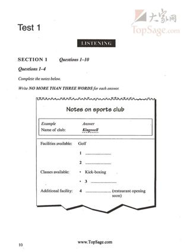
Cambridge_IELTS_06/Cambridge_IELTS_06_Listening_Complete/Images/Source_Pages/Test_1_Section_1_PDF_Page_011.jpg
asset-7d4a9ac26a921bff190733982eed754af7342f87429a4e89ad94b14336d726ff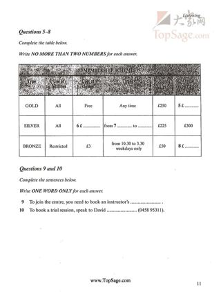
Cambridge_IELTS_06/Cambridge_IELTS_06_Listening_Complete/Images/Source_Pages/Test_1_Section_1_PDF_Page_012.jpg
asset-151efc63b36d2e2ddc5d0317ed50c5dd81841931e8b51957686a1469418a0371cambridge-06-test-01 / Part 2
Q11–16: asset-d0ac2f4c3d16
Q17–20: asset-37fb8b707fd1
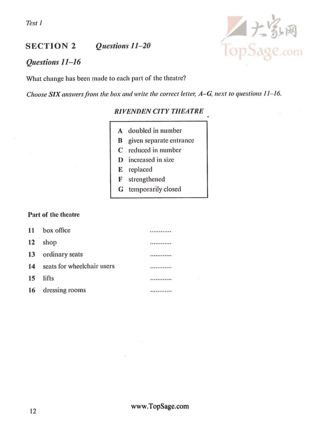
Cambridge_IELTS_06/Cambridge_IELTS_06_Listening_Complete/Images/Source_Pages/Test_1_Section_2_PDF_Page_013.jpg
asset-d0ac2f4c3d16d17a4398ba1935acd15dc5315d25ed67ef6cf3a34604c7a7a933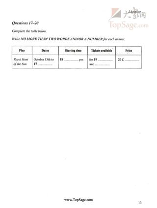
Cambridge_IELTS_06/Cambridge_IELTS_06_Listening_Complete/Images/Source_Pages/Test_1_Section_2_PDF_Page_014.jpg
asset-37fb8b707fd13756db402eb492cdd5df9304a713a49ed705f5f7ef4722cf58adcambridge-06-test-01 / Part 3
Q21–21: asset-bc14460407ac
Q22–25: asset-bc14460407ac
Q26–30: asset-1eb4551e4cb9
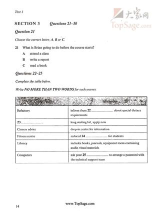
Cambridge_IELTS_06/Cambridge_IELTS_06_Listening_Complete/Images/Source_Pages/Test_1_Section_3_PDF_Page_015.jpg
asset-bc14460407ac8edcc5325334996a802129272ebda6ffbcc53f12bee59acf9292Cambridge_IELTS_06/Cambridge_IELTS_06_Listening_Complete/Images/Source_Pages/Test_1_Section_3_PDF_Page_016.jpg
asset-1eb4551e4cb970d5ff3885ef4a274cbe3c622c7588c84a8da43f0e00e105107dcambridge-06-test-01 / Part 4
Q31–37: asset-9789f09ec602
Q38–40: asset-4b954f0dc781
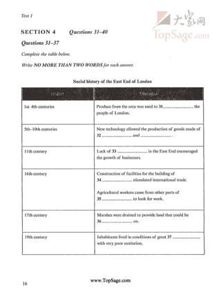
Cambridge_IELTS_06/Cambridge_IELTS_06_Listening_Complete/Images/Source_Pages/Test_1_Section_4_PDF_Page_017.jpg
asset-9789f09ec602ee1b5f367a5bfc21804cb0e7a0d51dbbd0a0cf2bdc98087da4b0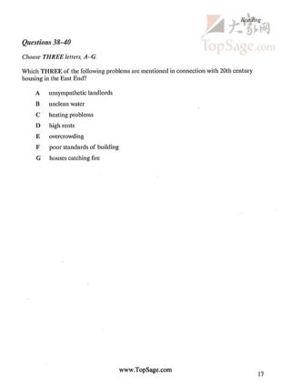
Cambridge_IELTS_06/Cambridge_IELTS_06_Listening_Complete/Images/Source_Pages/Test_1_Section_4_PDF_Page_018.jpg
asset-4b954f0dc7810094931966865150fbca8294dcf200f8d00cc04a7859d3bb7a4dcambridge-06-test-02 / Part 1
Q1–5: asset-f3b18bdf58d5
Q6–10: asset-1ab319d4dff1
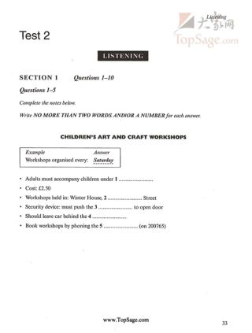
Cambridge_IELTS_06/Cambridge_IELTS_06_Listening_Complete/Images/Source_Pages/Test_2_Section_1_PDF_Page_034.jpg
asset-f3b18bdf58d5a232baaca6da50d1a7d3ce4c3cc9bd120281d7f4ea8d239ad99b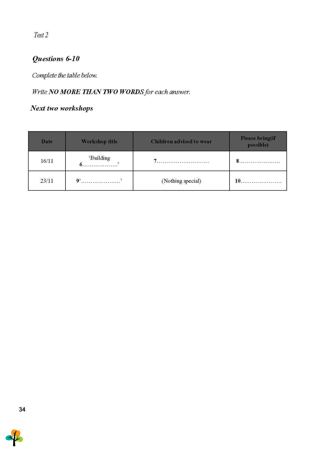
backend/scripts/listening_dataset/sources/cambridge-06-test-02-part-1.png
asset-1ab319d4dff1ce6fcde22c5f6db4d3c9d12456f57018a54229f374081146e03acambridge-06-test-02 / Part 2
Q11–14: asset-7a6bd325e3f9
Q15–17: asset-7a6bd325e3f9
Q18–20: asset-9bb29f544292
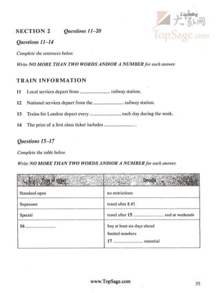
Cambridge_IELTS_06/Cambridge_IELTS_06_Listening_Complete/Images/Source_Pages/Test_2_Section_2_PDF_Page_036.jpg
asset-7a6bd325e3f99857c030c99087ca00a392cb8dd36a8c783745d66950fe01295f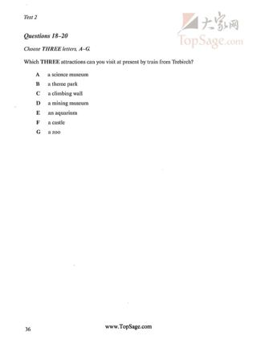
Cambridge_IELTS_06/Cambridge_IELTS_06_Listening_Complete/Images/Source_Pages/Test_2_Section_2_PDF_Page_037.jpg
asset-9bb29f544292bdb5ac91b62099d22473f9893a3597c349074e9a26ddb0c6e5f4cambridge-06-test-02 / Part 3
Q21–30: asset-92cc6685a95c
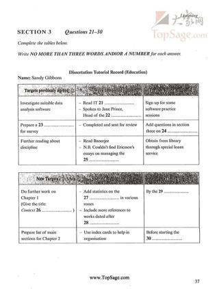
Cambridge_IELTS_06/Cambridge_IELTS_06_Listening_Complete/Images/Source_Pages/Test_2_Section_3_PDF_Page_038.jpg
asset-92cc6685a95cf163dbd8cd046012a3f104d37c14d6f0e15ac5cc6f02dc4d3b55cambridge-06-test-02 / Part 4
Q31–37: asset-aaa49ae52d4c
Q38–40: asset-aaa49ae52d4c → asset-750ec18314f8
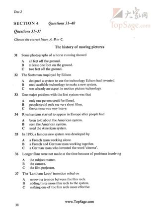
Cambridge_IELTS_06/Cambridge_IELTS_06_Listening_Complete/Images/Source_Pages/Test_2_Section_4_PDF_Page_039.jpg
asset-aaa49ae52d4c5dd92be5633532ae2517d9cf4d55dbccc7ccf1492d29241a8815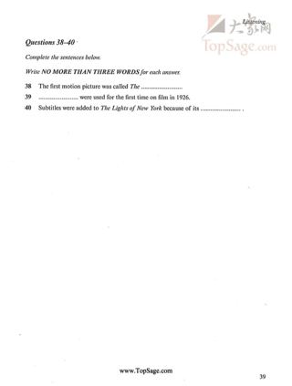
Cambridge_IELTS_06/Cambridge_IELTS_06_Listening_Complete/Images/Source_Pages/Test_2_Section_4_PDF_Page_040.jpg
asset-750ec18314f8574ceb29439770252d5c7d8b39eda1bc56d8d9a7dea8c9792b6bcambridge-06-test-03 / Part 1
Q1–10: asset-149d9ba1a136 → asset-ab264991c46e
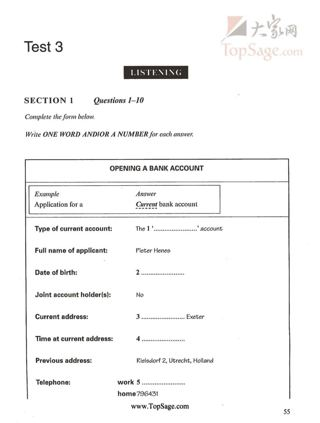
Cambridge_IELTS_06/Cambridge_IELTS_06_Listening_Complete/Images/Source_Pages/Test_3_Section_1_PDF_Page_056.jpg
asset-149d9ba1a13604a02a9a7ecf979aa224a4b6028140e79f0626e04579561e640d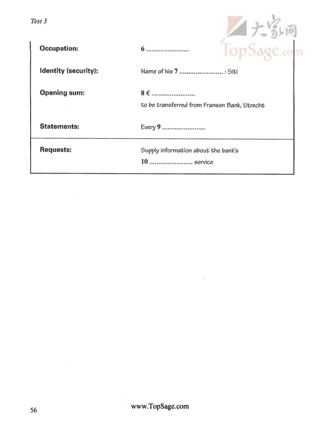
Cambridge_IELTS_06/Cambridge_IELTS_06_Listening_Complete/Images/Source_Pages/Test_3_Section_1_PDF_Page_057.jpg
asset-ab264991c46e896229699ac95bf5fc0cb6a40fcbef092b74798b8bab53016dbecambridge-06-test-03 / Part 2
Q11–13: asset-e311c0f9b6ab
Q14–17: asset-466e2e0c2e5b
Q18–20: asset-466e2e0c2e5b
Cambridge_IELTS_06/Cambridge_IELTS_06_Listening_Complete/Images/Source_Pages/Test_3_Section_2_PDF_Page_058.jpg
asset-e311c0f9b6ab96ae7472b91ce6783e1f514f3699731d14c3697bed8e73941dfa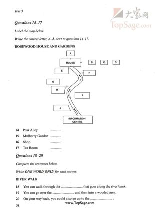
Cambridge_IELTS_06/Cambridge_IELTS_06_Listening_Complete/Images/Source_Pages/Test_3_Section_2_PDF_Page_059.jpg
asset-466e2e0c2e5b3874455fe5fcf48f05dc44dd3f1eb6c688fba080caf9fa093d17cambridge-06-test-03 / Part 3
Q21–24: asset-395e75b6424d
Q25–30: asset-a3d806a65c12
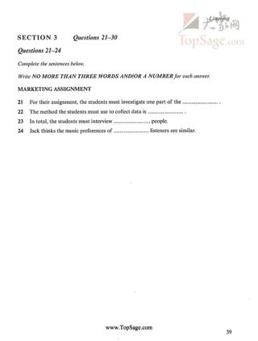
Cambridge_IELTS_06/Cambridge_IELTS_06_Listening_Complete/Images/Source_Pages/Test_3_Section_3_PDF_Page_060.jpg
asset-395e75b6424d0572230e5992eb94f21ff04aaa5837aa8ea25cbac27628ad0776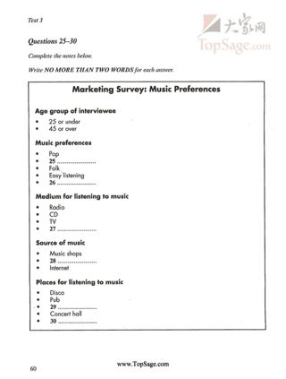
Cambridge_IELTS_06/Cambridge_IELTS_06_Listening_Complete/Images/Source_Pages/Test_3_Section_3_PDF_Page_061.jpg
asset-a3d806a65c12507c335671bba162d72ddfdd1fd91e0e8b0447cef5dcd1979027cambridge-06-test-03 / Part 4
Q31–34: asset-74feab8aaa0a
Q35–40: asset-0cce2c930e6f
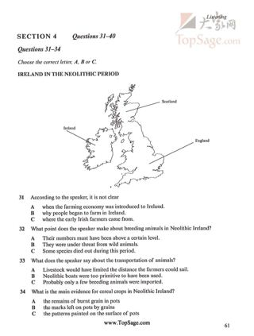
Cambridge_IELTS_06/Cambridge_IELTS_06_Listening_Complete/Images/Source_Pages/Test_3_Section_4_PDF_Page_062.jpg
asset-74feab8aaa0a830142b767bdc7c88d8408524ff8a33b857415dca002b14ee11b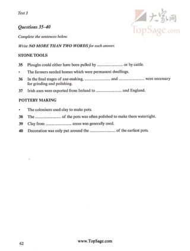
Cambridge_IELTS_06/Cambridge_IELTS_06_Listening_Complete/Images/Source_Pages/Test_3_Section_4_PDF_Page_063.jpg
asset-0cce2c930e6f20787568f2f2257fa3395a9b66803b358d5e8b415c05d341c50dcambridge-06-test-04 / Part 1
Q1–10: asset-2e8e6e0fae7a
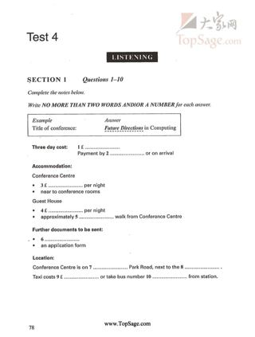
Cambridge_IELTS_06/Cambridge_IELTS_06_Listening_Complete/Images/Source_Pages/Test_4_Section_1_PDF_Page_079.jpg
asset-2e8e6e0fae7a9e6db714324219ba2f74f3f2a8d72291d919c6ddab27d2e80fbfcambridge-06-test-04 / Part 2
Q11–13: asset-a2c418ba82eb
Q14–20: asset-77cd449a6cf2
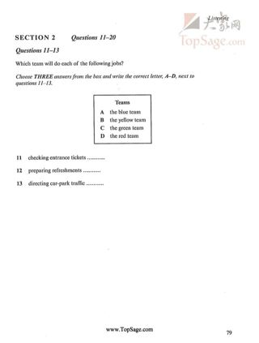
Cambridge_IELTS_06/Cambridge_IELTS_06_Listening_Complete/Images/Source_Pages/Test_4_Section_2_PDF_Page_080.jpg
asset-a2c418ba82eba241e82054e6c36388ac3815ae6ee61d9366e8b0cd5683758501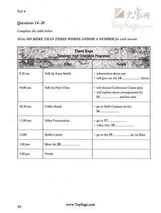
Cambridge_IELTS_06/Cambridge_IELTS_06_Listening_Complete/Images/Source_Pages/Test_4_Section_2_PDF_Page_081.jpg
asset-77cd449a6cf2ace309feeab7e32376c22f82e0e7f40791906bf076fe3112f6a1cambridge-06-test-04 / Part 3
Q21–25: asset-b723ab26cf04
Q26–27: asset-b723ab26cf04
Q28–30: asset-9d0fc3e969a7
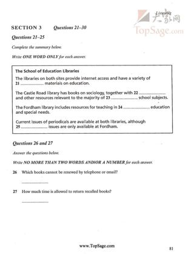
Cambridge_IELTS_06/Cambridge_IELTS_06_Listening_Complete/Images/Source_Pages/Test_4_Section_3_PDF_Page_082.jpg
asset-b723ab26cf04d9dc32c6db53c62c568294a8c1681a27f0eb667c0f2563e01c9a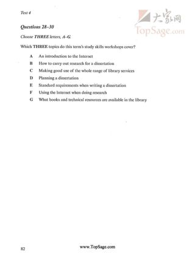
Cambridge_IELTS_06/Cambridge_IELTS_06_Listening_Complete/Images/Source_Pages/Test_4_Section_3_PDF_Page_083.jpg
asset-9d0fc3e969a74a68563925ca319f202c27a2632a2bf206fdad22c1c9592881a6cambridge-06-test-04 / Part 4
Q31–34: asset-47a9009e573c
Q35–40: asset-4eab84146252
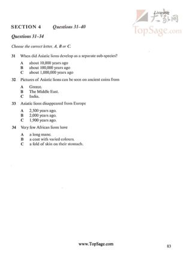
Cambridge_IELTS_06/Cambridge_IELTS_06_Listening_Complete/Images/Source_Pages/Test_4_Section_4_PDF_Page_084.jpg
asset-47a9009e573ce4e8247fa0eda7e355a4e6bf679d6e49128df96ff1fce03ca3fe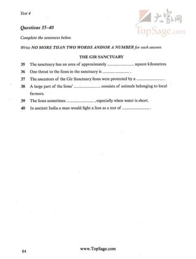
Cambridge_IELTS_06/Cambridge_IELTS_06_Listening_Complete/Images/Source_Pages/Test_4_Section_4_PDF_Page_085.jpg
asset-4eab841462527432d0a01741a95478adfc4e9a430c4fc80e16d414d471671a01cambridge-07-test-01 / Part 1
Q1–5: asset-25cdb5d10256
Q6–10: asset-717877a86b42
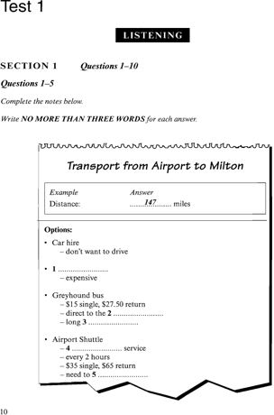
Cambridge_IELTS_07/Cambridge_IELTS_07_Listening_Complete/Images/Test_1_Section_1_PDF_014.png
asset-25cdb5d102569063751ef3324607bc381475898ef52fc6f2f6ceec579e13c4b4Cambridge_IELTS_07/Cambridge_IELTS_07_Listening_Complete/Images/Test_1_Section_1_PDF_015.png
asset-717877a86b42c5d736524fdbde6cc9a14f6100235b5f7223f436d6987cade147cambridge-07-test-01 / Part 2
Q11–16: asset-bac0213c0bb6
Q17–20: asset-ee2fdfb52ef0
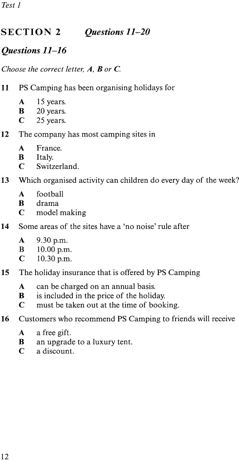
Cambridge_IELTS_07/Cambridge_IELTS_07_Listening_Complete/Images/Test_1_Section_2_PDF_016.png
asset-bac0213c0bb6a359e909d423f45ce463433a1b34e9217df21672d8b4e8499a99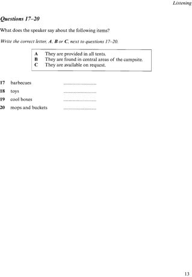
Cambridge_IELTS_07/Cambridge_IELTS_07_Listening_Complete/Images/Test_1_Section_2_PDF_017.png
asset-ee2fdfb52ef03fd107e91c1a1ebb0ef5d12f7fbf65f30b2472883e46afa046ffcambridge-07-test-01 / Part 3
Q21–23: asset-65bcf1e805dd
Q24–27: asset-95e7a429e028
Q28–30: asset-95e7a429e028
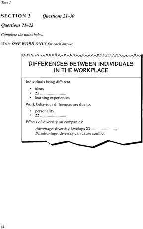
Cambridge_IELTS_07/Cambridge_IELTS_07_Listening_Complete/Images/Test_1_Section_3_PDF_018.png
asset-65bcf1e805dd85e509e597061c84d6d7806c991a839752aabfe26960a0765da2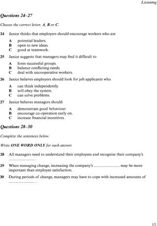
Cambridge_IELTS_07/Cambridge_IELTS_07_Listening_Complete/Images/Test_1_Section_3_PDF_019.png
asset-95e7a429e028c4c23222563fb7c2572f79bb1cb6682d443f04d3c769f9ad2045cambridge-07-test-01 / Part 4
Q31–35: asset-21a25aca1fd2
Q36–40: asset-367570d68512
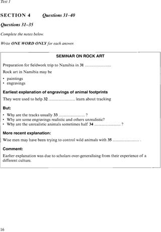
Cambridge_IELTS_07/Cambridge_IELTS_07_Listening_Complete/Images/Test_1_Section_4_PDF_020.png
asset-21a25aca1fd2ff920ca0a44f222fcd19fb9308c961aca9b3a5c60e1547e3965b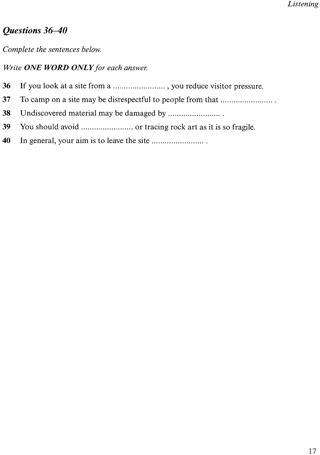
Cambridge_IELTS_07/Cambridge_IELTS_07_Listening_Complete/Images/Test_1_Section_4_PDF_021.png
asset-367570d685129067d3bb2c8f66f1ac7cb85d00758a3c2ec2324cb29b3010fab8cambridge-07-test-02 / Part 1
Q1–10: asset-892dc7776bcb
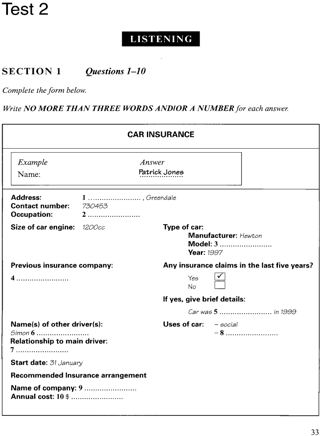
Cambridge_IELTS_07/Cambridge_IELTS_07_Listening_Complete/Images/Test_2_Section_1_PDF_037.png
asset-892dc7776bcbc3bcf8b44c140309e0831253ddab5a991b774c401fc26ed7ab49cambridge-07-test-02 / Part 2
Q11–12: asset-91461cc55d6b
Q13–18: asset-8c33e5754ef4
Q19–20: asset-8c33e5754ef4
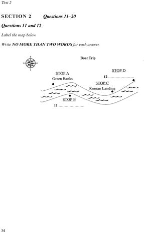
Cambridge_IELTS_07/Cambridge_IELTS_07_Listening_Complete/Images/Test_2_Section_2_PDF_038.png
asset-91461cc55d6b2e1625c02e4e508a0652df376011bb67c711b7059dd27f5f3e21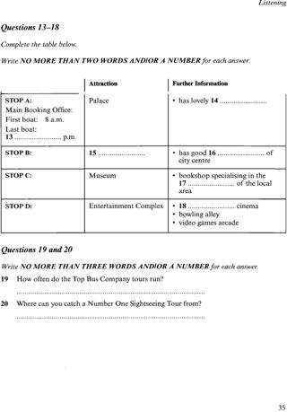
Cambridge_IELTS_07/Cambridge_IELTS_07_Listening_Complete/Images/Test_2_Section_2_PDF_039.png
asset-8c33e5754ef42eb9433c138157b7351310e340c08c17ddb86a77b1e90779276ccambridge-07-test-02 / Part 3
Q21–26: asset-8a4e8d0131b4
Q27–28: asset-902c0f421290
Q29–30: asset-902c0f421290
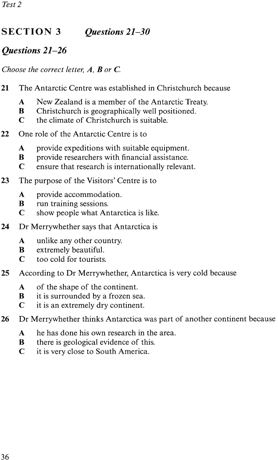
Cambridge_IELTS_07/Cambridge_IELTS_07_Listening_Complete/Images/Test_2_Section_3_PDF_040.png
asset-8a4e8d0131b41e1184e290d2fb0b687093a5c92f9935b58a0f4ca88348aaad11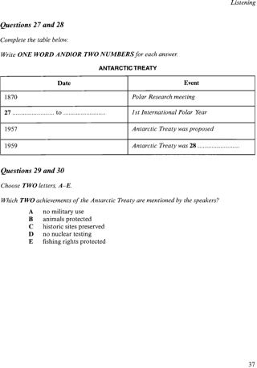
Cambridge_IELTS_07/Cambridge_IELTS_07_Listening_Complete/Images/Test_2_Section_3_PDF_041.png
asset-902c0f421290873f78fcef47a1daa8d2c7e4abbbf77587060e8163ba51885bbfcambridge-07-test-02 / Part 4
Q31–35: asset-3b52ae72f129
Q36–40: asset-3b52ae72f129 → asset-c9299a125255
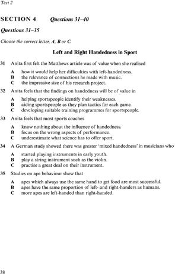
Cambridge_IELTS_07/Cambridge_IELTS_07_Listening_Complete/Images/Test_2_Section_4_PDF_042.png
asset-3b52ae72f129e7789100cb84f3aded368da668488dd9fdb44e363cb9fd91d72d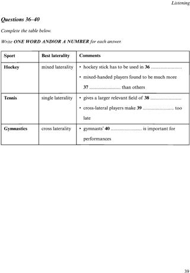
Cambridge_IELTS_07/Cambridge_IELTS_07_Listening_Complete/Images/Test_2_Section_4_PDF_043.png
asset-c9299a1252555da23575e7f583bb285c6a5a879278925b8d99464c09688a9cfacambridge-07-test-03 / Part 1
Q1–2: asset-00f25a609c60
Q3–5: asset-00f25a609c60
Q6–10: asset-5b59329c7a11
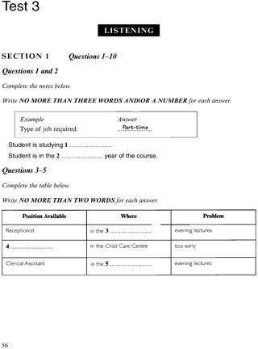
Cambridge_IELTS_07/Cambridge_IELTS_07_Listening_Complete/Images/Test_3_Section_1_PDF_060.png
asset-00f25a609c603d5aad1aa1b54f89382635d7178afaccb7cc595350eea9fead8b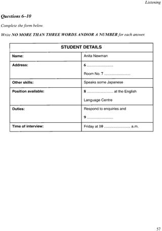
Cambridge_IELTS_07/Cambridge_IELTS_07_Listening_Complete/Images/Test_3_Section_1_PDF_061.png
asset-5b59329c7a11c0e140f1bca31a920b7c8e884ac5d12c72bdaa0c94dee3d59e74cambridge-07-test-03 / Part 2
Q11–16: asset-6b15dcbeb6d7
Q17–20: asset-f5ab4ba50efd
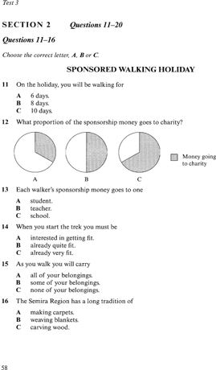
Cambridge_IELTS_07/Cambridge_IELTS_07_Listening_Complete/Images/Test_3_Section_2_PDF_062.png
asset-6b15dcbeb6d7f4cb3f908718164519c472664817308a82afb60ddf56f46a9360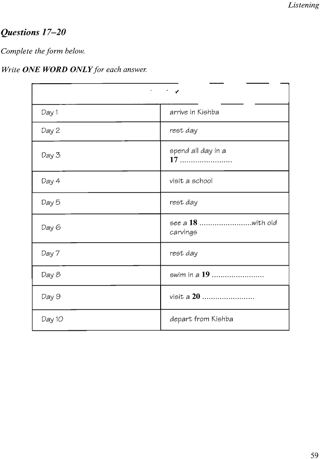
Cambridge_IELTS_07/Cambridge_IELTS_07_Listening_Complete/Images/Test_3_Section_2_PDF_063.png
asset-f5ab4ba50efdeb3013bb5006b9bd1e61fffdcd2fb8cd74a2354fb39cfe2d20ffcambridge-07-test-03 / Part 3
Q21–22: asset-bd09bfe92830
Q23–25: asset-9b12f7d7e2bb
Q26–30: asset-63e71302a4a6
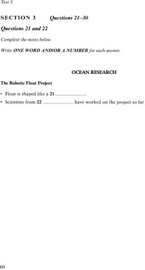
Cambridge_IELTS_07/Cambridge_IELTS_07_Listening_Complete/Images/Test_3_Section_3_PDF_064.png
asset-bd09bfe9283047c685ef224e3ad2fd8d1f9a363191ff2eb9ed6180b182d77e90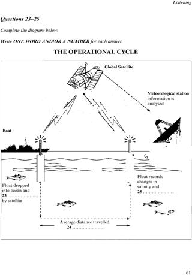
Cambridge_IELTS_07/Cambridge_IELTS_07_Listening_Complete/Images/Test_3_Section_3_PDF_065.png
asset-9b12f7d7e2bb1dec0eb999c79fc6dfd05645eb67f665d07a4d523132699fb707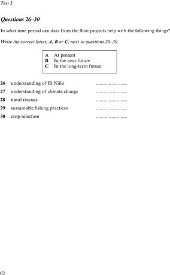
Cambridge_IELTS_07/Cambridge_IELTS_07_Listening_Complete/Images/Test_3_Section_3_PDF_066.png
asset-63e71302a4a635324335674475a4194c715e1ca0b52fa9690666753e3f41057ecambridge-07-test-03 / Part 4
Q31–34: asset-5edce90b3f20
Q35–40: asset-1a5d69427481
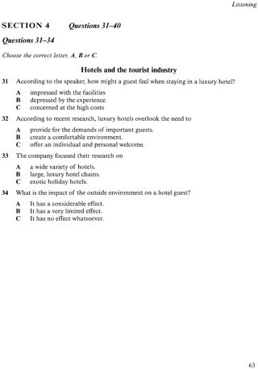
Cambridge_IELTS_07/Cambridge_IELTS_07_Listening_Complete/Images/Test_3_Section_4_PDF_067.png
asset-5edce90b3f20bec803002f4d98b38cc711a326826985bca0bb8b13307a3fcde9Cambridge_IELTS_07/Cambridge_IELTS_07_Listening_Complete/Images/Test_3_Section_4_PDF_068.png
asset-1a5d69427481125af0f55a588bd0e5fdcd3cd65685446f9591380b7399dbbeb7cambridge-07-test-04 / Part 1
Q1–6: asset-2d699765d752
Q7–10: asset-d04971525e7b
Cambridge_IELTS_07/Cambridge_IELTS_07_Listening_Complete/Images/Test_4_Section_1_PDF_085.png
asset-2d699765d75235aa6ec60a141a5011ed1349bffb7c57443faf06b55459a2f7ecCambridge_IELTS_07/Cambridge_IELTS_07_Listening_Complete/Images/Test_4_Section_1_PDF_086.png
asset-d04971525e7b57b63c9016f73a2093406d57bcab0b46d22a08bba25a53bcf3accambridge-07-test-04 / Part 2
Q11–14: asset-1e3088d31ccb
Q15–17: asset-a7c67992a6b3
Q18–20: asset-a7c67992a6b3
Cambridge_IELTS_07/Cambridge_IELTS_07_Listening_Complete/Images/Test_4_Section_2_PDF_087.png
asset-1e3088d31ccbbf6d1e3db2562165b23f1eb57526261836a3e6016b16442c6e62Cambridge_IELTS_07/Cambridge_IELTS_07_Listening_Complete/Images/Test_4_Section_2_PDF_088.png
asset-a7c67992a6b3326150d18cea0d9d508d4740d67ced286623e398bdb260d70a7bcambridge-07-test-04 / Part 3
Q21–22: asset-7b21f4f84406
Q23–26: asset-7b21f4f84406
Q27–30: asset-287610408dc8
Cambridge_IELTS_07/Cambridge_IELTS_07_Listening_Complete/Images/Test_4_Section_3_PDF_089.png
asset-7b21f4f844067596457c5c5bb474a1e7b467b01ccfa645b9a81a41e5e2b78cc7Cambridge_IELTS_07/Cambridge_IELTS_07_Listening_Complete/Images/Test_4_Section_3_PDF_090.png
asset-287610408dc88a1984212fb8e500eb2bc0da70f8a5723e5716b53c3002affbd0cambridge-07-test-04 / Part 4
Q31–33: asset-fcf217c0e72c
Q34–40: asset-56cc904097a5
Cambridge_IELTS_07/Cambridge_IELTS_07_Listening_Complete/Images/Test_4_Section_4_PDF_091.png
asset-fcf217c0e72c8aa0b6f8ff0baf1514845e297395a71123fdfdd370b9de3da290Cambridge_IELTS_07/Cambridge_IELTS_07_Listening_Complete/Images/Test_4_Section_4_PDF_092.png
asset-56cc904097a50cdc6107b0ede3bd6657fb1ba75c499a2a0a0ce71c8359fd573ecambridge-08-test-01 / Part 1
Q1–2: asset-c3ff82fad967 → asset-91ba6a4bd5b7
Q3–10: asset-c3ff82fad967 → asset-91ba6a4bd5b7
 Cambridge_IELTS_08/Cambridge_IELTS_08_Listening_Complete/Cambridge_IELTS_08_Listening_Images/Test_1_Section_1_PDF_009.png
Cambridge_IELTS_08/Cambridge_IELTS_08_Listening_Complete/Cambridge_IELTS_08_Listening_Images/Test_1_Section_1_PDF_009.png
asset-c3ff82fad967ec0476ac5efed57bd3ca26c1f9f1e3cf54f17413135d8fd8f391 Cambridge_IELTS_08/Cambridge_IELTS_08_Listening_Complete/Cambridge_IELTS_08_Listening_Images/Test_1_Section_1_PDF_010.png
Cambridge_IELTS_08/Cambridge_IELTS_08_Listening_Complete/Cambridge_IELTS_08_Listening_Images/Test_1_Section_1_PDF_010.png
asset-91ba6a4bd5b7ee1fb8e4912bbb23cf8399af1c8d43f7c3be8eaef13e6b48513ecambridge-08-test-01 / Part 2
Q11–15: asset-70d249cfaab6 → asset-8ec70fb94a32
Q16–18: asset-70d249cfaab6 → asset-8ec70fb94a32
Q19–20: asset-8ec70fb94a32
 Cambridge_IELTS_08/Cambridge_IELTS_08_Listening_Complete/Cambridge_IELTS_08_Listening_Images/Test_1_Section_2_PDF_011.png
Cambridge_IELTS_08/Cambridge_IELTS_08_Listening_Complete/Cambridge_IELTS_08_Listening_Images/Test_1_Section_2_PDF_011.png
asset-70d249cfaab68fbdd79843d3bdfdb13fc555575e45f2a3837d1b1c56aae93ddb Cambridge_IELTS_08/Cambridge_IELTS_08_Listening_Complete/Cambridge_IELTS_08_Listening_Images/Test_1_Section_2_PDF_012.png
Cambridge_IELTS_08/Cambridge_IELTS_08_Listening_Complete/Cambridge_IELTS_08_Listening_Images/Test_1_Section_2_PDF_012.png
asset-8ec70fb94a322b6a4d516eeaa4273586fd675612d0d828e5f8a3e320dcfc2201cambridge-08-test-01 / Part 3
Q21–24: asset-4eea84dd076b
Q25–27: asset-a43b0b429c52
Q28–30: asset-a43b0b429c52
 Cambridge_IELTS_08/Cambridge_IELTS_08_Listening_Complete/Cambridge_IELTS_08_Listening_Images/Test_1_Section_3_PDF_013.png
Cambridge_IELTS_08/Cambridge_IELTS_08_Listening_Complete/Cambridge_IELTS_08_Listening_Images/Test_1_Section_3_PDF_013.png
asset-4eea84dd076b92b700e5e936ad45174ce2c3e039c745e5a662dcada3780ee741 Cambridge_IELTS_08/Cambridge_IELTS_08_Listening_Complete/Cambridge_IELTS_08_Listening_Images/Test_1_Section_3_PDF_014.png
Cambridge_IELTS_08/Cambridge_IELTS_08_Listening_Complete/Cambridge_IELTS_08_Listening_Images/Test_1_Section_3_PDF_014.png
asset-a43b0b429c52dc7e7837dd2a81ff3125f875063d993aa62f986d5f3d5e1ce82ecambridge-08-test-01 / Part 4
Q31–40: asset-b809d6a3e472 → asset-853e3a2aa331
 Cambridge_IELTS_08/Cambridge_IELTS_08_Listening_Complete/Cambridge_IELTS_08_Listening_Images/Test_1_Section_4_PDF_015.png
Cambridge_IELTS_08/Cambridge_IELTS_08_Listening_Complete/Cambridge_IELTS_08_Listening_Images/Test_1_Section_4_PDF_015.png
asset-b809d6a3e472db36340048cbb75d333251d20fe3118f0ee39c2a27e13f6d8820 Cambridge_IELTS_08/Cambridge_IELTS_08_Listening_Complete/Cambridge_IELTS_08_Listening_Images/Test_1_Section_4_PDF_016.png
Cambridge_IELTS_08/Cambridge_IELTS_08_Listening_Complete/Cambridge_IELTS_08_Listening_Images/Test_1_Section_4_PDF_016.png
asset-853e3a2aa3312059e0ffb9b3322e4ced197b0b7c2ac4e9e58eabaa22cb98a0fdcambridge-08-test-02 / Part 1
Q1–3: asset-028def577baf
Q4–10: asset-6e5743b8cc2f
 Cambridge_IELTS_08/Cambridge_IELTS_08_Listening_Complete/Cambridge_IELTS_08_Listening_Images/Test_2_Section_1_PDF_032.png
Cambridge_IELTS_08/Cambridge_IELTS_08_Listening_Complete/Cambridge_IELTS_08_Listening_Images/Test_2_Section_1_PDF_032.png
asset-028def577baf073853409b3e49311d878f4658dd99e053d61acc35942d87f651 Cambridge_IELTS_08/Cambridge_IELTS_08_Listening_Complete/Cambridge_IELTS_08_Listening_Images/Test_2_Section_1_PDF_033.png
Cambridge_IELTS_08/Cambridge_IELTS_08_Listening_Complete/Cambridge_IELTS_08_Listening_Images/Test_2_Section_1_PDF_033.png
asset-6e5743b8cc2ff709113a27b4c56503a0e0f74cdf7d5b505c3979e5856d89b54ecambridge-08-test-02 / Part 2
Q11–11: asset-e19b974bcd19
Q12–14: asset-e19b974bcd19
Q15–20: asset-e0d8489890ff
 Cambridge_IELTS_08/Cambridge_IELTS_08_Listening_Complete/Cambridge_IELTS_08_Listening_Images/Test_2_Section_2_PDF_034.png
Cambridge_IELTS_08/Cambridge_IELTS_08_Listening_Complete/Cambridge_IELTS_08_Listening_Images/Test_2_Section_2_PDF_034.png
asset-e19b974bcd191abbd7e6f7f563a936053778b04c700cad1f9064384e4d824712 Cambridge_IELTS_08/Cambridge_IELTS_08_Listening_Complete/Cambridge_IELTS_08_Listening_Images/Test_2_Section_2_PDF_035.png
Cambridge_IELTS_08/Cambridge_IELTS_08_Listening_Complete/Cambridge_IELTS_08_Listening_Images/Test_2_Section_2_PDF_035.png
asset-e0d8489890ff0b7991cd97bf003b9e8ff84f84c0d110883dc173372bc265369bcambridge-08-test-02 / Part 3
Q21–24: asset-d6724540a6a2
Q25–30: asset-0863b178eb14
 Cambridge_IELTS_08/Cambridge_IELTS_08_Listening_Complete/Cambridge_IELTS_08_Listening_Images/Test_2_Section_3_PDF_036.png
Cambridge_IELTS_08/Cambridge_IELTS_08_Listening_Complete/Cambridge_IELTS_08_Listening_Images/Test_2_Section_3_PDF_036.png
asset-d6724540a6a2990b6e8d2abbe61b070ab1ddf7aca9daa9eca83f1c100c6e340c Cambridge_IELTS_08/Cambridge_IELTS_08_Listening_Complete/Cambridge_IELTS_08_Listening_Images/Test_2_Section_3_PDF_037.png
Cambridge_IELTS_08/Cambridge_IELTS_08_Listening_Complete/Cambridge_IELTS_08_Listening_Images/Test_2_Section_3_PDF_037.png
asset-0863b178eb14f521c3f296035e555a5493c6c5571b3f22ad5e65c54912a63241cambridge-08-test-02 / Part 4
Q31–36: asset-3ae1b249261f
Q37–40: asset-3ae1b249261f → asset-1174cca9fed4
 Cambridge_IELTS_08/Cambridge_IELTS_08_Listening_Complete/Cambridge_IELTS_08_Listening_Images/Test_2_Section_4_PDF_038.png
Cambridge_IELTS_08/Cambridge_IELTS_08_Listening_Complete/Cambridge_IELTS_08_Listening_Images/Test_2_Section_4_PDF_038.png
asset-3ae1b249261f640f9fd87f6db006b4bbaa501a841e4e4eaaa0f48f9d834bd23e Cambridge_IELTS_08/Cambridge_IELTS_08_Listening_Complete/Cambridge_IELTS_08_Listening_Images/Test_2_Section_4_PDF_039.png
Cambridge_IELTS_08/Cambridge_IELTS_08_Listening_Complete/Cambridge_IELTS_08_Listening_Images/Test_2_Section_4_PDF_039.png
asset-1174cca9fed40e5c2ae55c3f777a78c3755d87a8d018e81441681121cccb3dd3cambridge-08-test-03 / Part 1
Q1–3: asset-b6e6f96e1f33
Q4–8: asset-c1a0f801298f
Q9–10: asset-dc0a174a323f
 Cambridge_IELTS_08/Cambridge_IELTS_08_Listening_Complete/Cambridge_IELTS_08_Listening_Images/Test_3_Section_1_PDF_055.png
Cambridge_IELTS_08/Cambridge_IELTS_08_Listening_Complete/Cambridge_IELTS_08_Listening_Images/Test_3_Section_1_PDF_055.png
asset-b6e6f96e1f332d70f5b94d9cf7d8f3d0a4a595c9ad052dac3877ac8694229f87 Cambridge_IELTS_08/Cambridge_IELTS_08_Listening_Complete/Cambridge_IELTS_08_Listening_Images/Test_3_Section_1_PDF_056.png
Cambridge_IELTS_08/Cambridge_IELTS_08_Listening_Complete/Cambridge_IELTS_08_Listening_Images/Test_3_Section_1_PDF_056.png
asset-c1a0f801298f2422058984c18336096fa41648b81aa927812fb881bb203d6015 Cambridge_IELTS_08/Cambridge_IELTS_08_Listening_Complete/Cambridge_IELTS_08_Listening_Images/Test_3_Section_1_PDF_057.png
Cambridge_IELTS_08/Cambridge_IELTS_08_Listening_Complete/Cambridge_IELTS_08_Listening_Images/Test_3_Section_1_PDF_057.png
asset-dc0a174a323f297d4ee38e4c7c13b1c17687dfd1aa8e76ca6344b81e3d33b0b3cambridge-08-test-03 / Part 2
Q11–16: asset-bb408ea9727f
Q17–20: asset-638515a53f20
 Cambridge_IELTS_08/Cambridge_IELTS_08_Listening_Complete/Cambridge_IELTS_08_Listening_Images/Test_3_Section_2_PDF_058.png
Cambridge_IELTS_08/Cambridge_IELTS_08_Listening_Complete/Cambridge_IELTS_08_Listening_Images/Test_3_Section_2_PDF_058.png
asset-bb408ea9727f85aff70aa26c1da8c16a7cc3fa9bc3671192b54c831edc7b14fe Cambridge_IELTS_08/Cambridge_IELTS_08_Listening_Complete/Cambridge_IELTS_08_Listening_Images/Test_3_Section_2_PDF_059.png
Cambridge_IELTS_08/Cambridge_IELTS_08_Listening_Complete/Cambridge_IELTS_08_Listening_Images/Test_3_Section_2_PDF_059.png
asset-638515a53f20af17e124abc1a3302101f73062e8d748dff2a89b4710d648a36ccambridge-08-test-03 / Part 3
Q21–26: asset-b6cc69dc513e
Q27–30: asset-86673bec815e
 Cambridge_IELTS_08/Cambridge_IELTS_08_Listening_Complete/Cambridge_IELTS_08_Listening_Images/Test_3_Section_3_PDF_060.png
Cambridge_IELTS_08/Cambridge_IELTS_08_Listening_Complete/Cambridge_IELTS_08_Listening_Images/Test_3_Section_3_PDF_060.png
asset-b6cc69dc513ea5cad2c5d09579446c217bbe276d46fcdc34f82c458eb2812702 Cambridge_IELTS_08/Cambridge_IELTS_08_Listening_Complete/Cambridge_IELTS_08_Listening_Images/Test_3_Section_3_PDF_061.png
Cambridge_IELTS_08/Cambridge_IELTS_08_Listening_Complete/Cambridge_IELTS_08_Listening_Images/Test_3_Section_3_PDF_061.png
asset-86673bec815ed72c553bb6c62672ab3dafcd50f3b18b2e86a6be608a938828aecambridge-08-test-03 / Part 4
Q31–34: asset-7e181de3963b
Q35–40: asset-213a607bdbe5
 Cambridge_IELTS_08/Cambridge_IELTS_08_Listening_Complete/Cambridge_IELTS_08_Listening_Images/Test_3_Section_4_PDF_062.png
Cambridge_IELTS_08/Cambridge_IELTS_08_Listening_Complete/Cambridge_IELTS_08_Listening_Images/Test_3_Section_4_PDF_062.png
asset-7e181de3963b28e0758a6d7d0ef14fd1e9bbfc2d120f547f91743c5620759baa Cambridge_IELTS_08/Cambridge_IELTS_08_Listening_Complete/Cambridge_IELTS_08_Listening_Images/Test_3_Section_4_PDF_063.png
Cambridge_IELTS_08/Cambridge_IELTS_08_Listening_Complete/Cambridge_IELTS_08_Listening_Images/Test_3_Section_4_PDF_063.png
asset-213a607bdbe5d3e649ebda15f02744ba77829d7a61275d8552cec74658d9a007cambridge-08-test-04 / Part 1
Q1–10: asset-8ab56d934d98
 Cambridge_IELTS_08/Cambridge_IELTS_08_Listening_Complete/Cambridge_IELTS_08_Listening_Images/Test_4_Section_1_PDF_080.png
Cambridge_IELTS_08/Cambridge_IELTS_08_Listening_Complete/Cambridge_IELTS_08_Listening_Images/Test_4_Section_1_PDF_080.png
asset-8ab56d934d980c3a1af7ff1d1c21bde4fd3e011445a69c0164a63e9a8ef75c2bcambridge-08-test-04 / Part 2
Q11–13: asset-1a9c390695b0
Q14–20: asset-3178707596fe
 Cambridge_IELTS_08/Cambridge_IELTS_08_Listening_Complete/Cambridge_IELTS_08_Listening_Images/Test_4_Section_2_PDF_081.png
Cambridge_IELTS_08/Cambridge_IELTS_08_Listening_Complete/Cambridge_IELTS_08_Listening_Images/Test_4_Section_2_PDF_081.png
asset-1a9c390695b0913cf0740420d060df0d87ba0231311369ecc0d6445c51080fad Cambridge_IELTS_08/Cambridge_IELTS_08_Listening_Complete/Cambridge_IELTS_08_Listening_Images/Test_4_Section_2_PDF_082.png
Cambridge_IELTS_08/Cambridge_IELTS_08_Listening_Complete/Cambridge_IELTS_08_Listening_Images/Test_4_Section_2_PDF_082.png
asset-3178707596fe8f7cdad3ad479feabf23dc6a7444d8a2ec036317816ec5254650cambridge-08-test-04 / Part 3
Q21–22: asset-d6945092111c
Q23–24: asset-d6945092111c
Q25–26: asset-d6945092111c
Q27–30: asset-30cacbb0e964
 Cambridge_IELTS_08/Cambridge_IELTS_08_Listening_Complete/Cambridge_IELTS_08_Listening_Images/Test_4_Section_3_PDF_083.png
Cambridge_IELTS_08/Cambridge_IELTS_08_Listening_Complete/Cambridge_IELTS_08_Listening_Images/Test_4_Section_3_PDF_083.png
asset-d6945092111c4e01f9b825c1d3ad4b1411acb98dfbb2212b366fbf424527e355 Cambridge_IELTS_08/Cambridge_IELTS_08_Listening_Complete/Cambridge_IELTS_08_Listening_Images/Test_4_Section_3_PDF_084.png
Cambridge_IELTS_08/Cambridge_IELTS_08_Listening_Complete/Cambridge_IELTS_08_Listening_Images/Test_4_Section_3_PDF_084.png
asset-30cacbb0e9648ba154c1279f2f0d37228f08947e04fb8a9ece20c911c3b9ade0cambridge-08-test-04 / Part 4
Q31–36: asset-199a193fe8ec
Q37–40: asset-eae182439414
 Cambridge_IELTS_08/Cambridge_IELTS_08_Listening_Complete/Cambridge_IELTS_08_Listening_Images/Test_4_Section_4_PDF_085.png
Cambridge_IELTS_08/Cambridge_IELTS_08_Listening_Complete/Cambridge_IELTS_08_Listening_Images/Test_4_Section_4_PDF_085.png
asset-199a193fe8ec7ebce829af2fe5367e7fc73a24775df6673abaeb0dbb289c1d59 Cambridge_IELTS_08/Cambridge_IELTS_08_Listening_Complete/Cambridge_IELTS_08_Listening_Images/Test_4_Section_4_PDF_086.png
Cambridge_IELTS_08/Cambridge_IELTS_08_Listening_Complete/Cambridge_IELTS_08_Listening_Images/Test_4_Section_4_PDF_086.png
asset-eae182439414707c6a710c554c4f58d739621514f6a68d738da459867bc4a7c5cambridge-09-test-01 / Part 1
Q1–10: asset-718c37f41c63
Cambridge_IELTS_09/Cambridge_IELTS_09_Listening_Complete/Images/Test_1_Section_1_PDF_Page_001.jpg
asset-718c37f41c6344e5a7df8a73465ef48882a81bfa52641694f7022b18a145924fcambridge-09-test-01 / Part 2
Q11–16: asset-254aa9c20130
Q17–18: asset-254aa9c20130
Q19–20: asset-d8b31ff576a1
Cambridge_IELTS_09/Cambridge_IELTS_09_Listening_Complete/Images/Test_1_Section_2_PDF_Page_002.jpg
asset-254aa9c201309cc271774c1c0143410c82b0b950355d4a15f50b0c7a86fbf46cCambridge_IELTS_09/Cambridge_IELTS_09_Listening_Complete/Images/Test_1_Section_2_PDF_Page_003.jpg
asset-d8b31ff576a109f9af1a01612c59820da253cce2d20f7e6cfb3bc74b31d83edacambridge-09-test-01 / Part 3
Q21–30: asset-8521c5b13514 → asset-09aee14aa4a8
Cambridge_IELTS_09/Cambridge_IELTS_09_Listening_Complete/Images/Test_1_Section_3_PDF_Page_004.jpg
asset-8521c5b13514b387ac8326b02a5d63f3a28f756296cee74131ae9a1d18238b41Cambridge_IELTS_09/Cambridge_IELTS_09_Listening_Complete/Images/Test_1_Section_3_PDF_Page_005.jpg
asset-09aee14aa4a8ef116ae246c390545035db476d46a3cb47c36e50eb6eb42f042ccambridge-09-test-01 / Part 4
Q31–40: asset-c48f55ae443b
Cambridge_IELTS_09/Cambridge_IELTS_09_Listening_Complete/Images/Test_1_Section_4_PDF_Page_006.jpg
asset-c48f55ae443b1b92349a6106571965a5f13927008fc5785ae684b9c376584b6bcambridge-09-test-02 / Part 1
Q1–10: asset-a5608ab3bfd8
Cambridge_IELTS_09/Cambridge_IELTS_09_Listening_Complete/Images/Test_2_Section_1_PDF_Page_028.jpg
asset-a5608ab3bfd80bab1e8aeeb32b8bba4e4c04100ad847ef0ea0ee5a29736d0594cambridge-09-test-02 / Part 2
Q11–13: asset-dee84aae6005
Q14–16: asset-dee84aae6005 → asset-c807b06d0f8e
Q17–20: asset-c807b06d0f8e
Cambridge_IELTS_09/Cambridge_IELTS_09_Listening_Complete/Images/Test_2_Section_2_PDF_Page_029.jpg
asset-dee84aae600590be7edc3b69e6d62c27799f31546f7f7e994a040febe65e8fecCambridge_IELTS_09/Cambridge_IELTS_09_Listening_Complete/Images/Test_2_Section_2_PDF_Page_030.jpg
asset-c807b06d0f8e77a0799e466a8b72b9b624a990e702f61bd3868321fd5d7f2156cambridge-09-test-02 / Part 3
Q21–24: asset-96ebadd5eed2
Q25–30: asset-4f2f5d580856
Cambridge_IELTS_09/Cambridge_IELTS_09_Listening_Complete/Images/Test_2_Section_3_PDF_Page_031.jpg
asset-96ebadd5eed2d2348bf4acbd3ba0ece93cbed49e56518a65ccb593aae8ac2804Cambridge_IELTS_09/Cambridge_IELTS_09_Listening_Complete/Images/Test_2_Section_3_PDF_Page_032.jpg
asset-4f2f5d580856dc53579c221c4711a0a5dce98edf2b7129d40a6d877fbb9c70c0cambridge-09-test-02 / Part 4
Q31–40: asset-2461a0101267 → asset-78ea1bebbb08
Cambridge_IELTS_09/Cambridge_IELTS_09_Listening_Complete/Images/Test_2_Section_4_PDF_Page_033.jpg
asset-2461a0101267760cce9522562e91eb8277d68a2196ca011e27b1f1175454b971Cambridge_IELTS_09/Cambridge_IELTS_09_Listening_Complete/Images/Test_2_Section_4_PDF_Page_034.jpg
asset-78ea1bebbb084960f7083edc0b1e546b20d142880196147039816b23df843267cambridge-09-test-03 / Part 1
Q1–5: asset-8a5ba7d63bdc
Q6–10: asset-e12eb8e777ed
Cambridge_IELTS_09/Cambridge_IELTS_09_Listening_Complete/Images/Test_3_Section_1_PDF_Page_057.jpg
asset-8a5ba7d63bdc0feb7e5806b471dcd6e11ab216b00d0892a6c4529f7de91e16f3Cambridge_IELTS_09/Cambridge_IELTS_09_Listening_Complete/Images/Test_3_Section_1_PDF_Page_058.jpg
asset-e12eb8e777eda29b77550c94a8a924d451c16e500f2c2c1c4b5e5af5a7869a73cambridge-09-test-03 / Part 2
Q11–13: asset-4ccf020e6eb7
Q14–18: asset-4ccf020e6eb7 → asset-fb72d3e631e0
Q19–20: asset-fb72d3e631e0
Cambridge_IELTS_09/Cambridge_IELTS_09_Listening_Complete/Images/Test_3_Section_2_PDF_Page_059.jpg
asset-4ccf020e6eb7b1dbb22d7c404674a8dbaa405785a05626063cf1ede0bc55fda4Cambridge_IELTS_09/Cambridge_IELTS_09_Listening_Complete/Images/Test_3_Section_2_PDF_Page_060.jpg
asset-fb72d3e631e047c6ac5b2fd3e158ce0a5b61f758bd0948f23dae34294f61c7d5cambridge-09-test-03 / Part 3
Q21–30: asset-8bc043d74120
Cambridge_IELTS_09/Cambridge_IELTS_09_Listening_Complete/Images/Test_3_Section_3_PDF_Page_061.jpg
asset-8bc043d741200ad5b1ce8ac761221113630738bd1d34de68a7fa4291ba2734f0cambridge-09-test-03 / Part 4
Q31–32: asset-d3051fd52a76
Q33–40: asset-d3051fd52a76 → asset-20f6e0511ac7
Cambridge_IELTS_09/Cambridge_IELTS_09_Listening_Complete/Images/Test_3_Section_4_PDF_Page_062.jpg
asset-d3051fd52a764df6e443ced002a23b7217014228fa4813a51083484f3ec42116Cambridge_IELTS_09/Cambridge_IELTS_09_Listening_Complete/Images/Test_3_Section_4_PDF_Page_063.jpg
asset-20f6e0511ac715526796873642ed63c8393ce12353b5bcc40726f710cf090f9ccambridge-09-test-04 / Part 1
Q1–4: asset-65b0f3165011
Q5–6: asset-65b0f3165011
Q7–10: asset-836fcd8aaf3a
Cambridge_IELTS_09/Cambridge_IELTS_09_Listening_Complete/Images/Test_4_Section_1_PDF_Page_084.jpg
asset-65b0f3165011ab12fb47befbd7e9fe4439e03b3a9c4b73ba5888b6f91e2b760dCambridge_IELTS_09/Cambridge_IELTS_09_Listening_Complete/Images/Test_4_Section_1_PDF_Page_085.jpg
asset-836fcd8aaf3acb5d5d90c130499c9e2a3cfa7639486cfc0e8d117ee0f8413ea8cambridge-09-test-04 / Part 2
Q11–13: asset-8e2da65e03f2
Q14–18: asset-0ff3eeb10353
Q19–20: asset-81ca2eb286ac
Cambridge_IELTS_09/Cambridge_IELTS_09_Listening_Complete/Images/Test_4_Section_2_PDF_Page_086.jpg
asset-8e2da65e03f2eeba90643b644dd61575beed6dcf670536e05b70b8432c9e3968Cambridge_IELTS_09/Cambridge_IELTS_09_Listening_Complete/Images/Test_4_Section_2_PDF_Page_087.jpg
asset-0ff3eeb103536bfe7a3b28d8a3e165641eb87789af16bbb9b41b8512844efad1Cambridge_IELTS_09/Cambridge_IELTS_09_Listening_Complete/Images/Test_4_Section_2_PDF_Page_088.jpg
asset-81ca2eb286ac2c8b46efb51201fa95f74e37d9cf56bb77d53094cd7cc9021531cambridge-09-test-04 / Part 3
Q21–22: asset-acc06a3c7e43
Q23–25: asset-acc06a3c7e43
Q26–30: asset-fdcf4ea2fcb8
Cambridge_IELTS_09/Cambridge_IELTS_09_Listening_Complete/Images/Test_4_Section_3_PDF_Page_089.jpg
asset-acc06a3c7e43ba19cc7a514b79daca2214c9f7de005c5554a71d75cb20165481Cambridge_IELTS_09/Cambridge_IELTS_09_Listening_Complete/Images/Test_4_Section_3_PDF_Page_090.jpg
asset-fdcf4ea2fcb8a7f15d25636d4ff6315e474e90db2d882d8c88b3d38fdbaff1adcambridge-09-test-04 / Part 4
Q31–36: asset-5df6f929af2a → asset-c38885c8f6f3
Q37–40: asset-c38885c8f6f3
Cambridge_IELTS_09/Cambridge_IELTS_09_Listening_Complete/Images/Test_4_Section_4_PDF_Page_091.jpg
asset-5df6f929af2ae70c7c359639a620fa694112be90af5c7be76aea67e0ff2f73a6Cambridge_IELTS_09/Cambridge_IELTS_09_Listening_Complete/Images/Test_4_Section_4_PDF_Page_092.jpg
asset-c38885c8f6f347ff4fc82bd77d11899cbc5aaddc30cfb9661417c3c404236ab9cambridge-10-test-01 / Part 1
Q1–6: asset-2178fce02700
Q7–10: asset-87f33bf1c423
Cambridge_IELTS_10/Cambridge_IELTS_10_Listening_Complete/Images/Test_1/Section_1/PDF_002.jpg
asset-2178fce027006ff693252b36d5a044134c0a944d23fd0fc5807a071f5f71245aCambridge_IELTS_10/Cambridge_IELTS_10_Listening_Complete/Images/Test_1/Section_1/PDF_003.jpg
asset-87f33bf1c42357e1530bcda6eddef59a917004510b65cce6a10de8632f1f8d15cambridge-10-test-01 / Part 2
Q11–12: asset-580efbc74c9e
Q13–20: asset-1b7d2be90996
Cambridge_IELTS_10/Cambridge_IELTS_10_Listening_Complete/Images/Test_1/Section_2/PDF_004.jpg
asset-580efbc74c9e4f8c9c38ac6d088902255960a2a17887f7bf443b0b86f58ba688Cambridge_IELTS_10/Cambridge_IELTS_10_Listening_Complete/Images/Test_1/Section_2/PDF_005.jpg
asset-1b7d2be909968462b719d3ed90755375e4b30b03a5b0248e0499e5f1c60e28bdcambridge-10-test-01 / Part 3
Q21–25: asset-85dda2b96a0e
Q26–30: asset-d629ce27e47b
Cambridge_IELTS_10/Cambridge_IELTS_10_Listening_Complete/Images/Test_1/Section_3/PDF_006.jpg
asset-85dda2b96a0e507d53487e0edfb8412d9dcbf1bfe9a78289f46bbcd081d62371Cambridge_IELTS_10/Cambridge_IELTS_10_Listening_Complete/Images/Test_1/Section_3/PDF_007.jpg
asset-d629ce27e47b0b2f87fa8c267cad7e52899cbdc50ba775a9ca18defa97857de2cambridge-10-test-01 / Part 4
Q31–40: asset-8d727ef6dee3
Cambridge_IELTS_10/Cambridge_IELTS_10_Listening_Complete/Images/Test_1/Section_4/PDF_008.jpg
asset-8d727ef6dee323ccf0d81c028b61dfa5589472ee0ea7d39a51f64a120a9e7a42cambridge-10-test-02 / Part 1
Q1–10: asset-78e254acb4fe → asset-7370ce8c9b34
Cambridge_IELTS_10/Cambridge_IELTS_10_Listening_Complete/Images/Test_2/Section_1/PDF_025.jpg
asset-78e254acb4fe0e20dedc0c720419886e2b4df9fd78a668a32a8988f4d40ed37dCambridge_IELTS_10/Cambridge_IELTS_10_Listening_Complete/Images/Test_2/Section_1/PDF_026.jpg
asset-7370ce8c9b347375d3f4c3dadefbc4b6428621b1422c8010ef3e036518c37759cambridge-10-test-02 / Part 2
Q11–14: asset-66627198b4b3
Q15–20: asset-8e9adb66622a
Cambridge_IELTS_10/Cambridge_IELTS_10_Listening_Complete/Images/Test_2/Section_2/PDF_027.jpg
asset-66627198b4b359bda0460f5db7e5fb7b37c4d0706517c6fa4de42c7d5ed1edebCambridge_IELTS_10/Cambridge_IELTS_10_Listening_Complete/Images/Test_2/Section_2/PDF_028.jpg
asset-8e9adb66622afa74ec1ce9426a0baf52883679ae73e9dd6b24e7fa32990c236ccambridge-10-test-02 / Part 3
Q21–22: asset-e6bd4328aa2f
Q23–24: asset-e6bd4328aa2f
Q25–30: asset-e6bd4328aa2f → asset-3b5e98604394
Cambridge_IELTS_10/Cambridge_IELTS_10_Listening_Complete/Images/Test_2/Section_3/PDF_029.jpg
asset-e6bd4328aa2fd18a07dbfae47141b0ff13621d0b1f1ad4dd0b3b95eb257604d1Cambridge_IELTS_10/Cambridge_IELTS_10_Listening_Complete/Images/Test_2/Section_3/PDF_030.jpg
asset-3b5e98604394a31b2057b5522c619ca71df07dff3a9c6286fd7ab397788f925dcambridge-10-test-02 / Part 4
Q31–40: asset-5c53ef246c77 → asset-fbfcc2edfb74
Cambridge_IELTS_10/Cambridge_IELTS_10_Listening_Complete/Images/Test_2/Section_4/PDF_031.jpg
asset-5c53ef246c77d70fbd3193e66fc54fcadf1fea054bf8c8f458f30a8980bed891Cambridge_IELTS_10/Cambridge_IELTS_10_Listening_Complete/Images/Test_2/Section_4/PDF_032.jpg
asset-fbfcc2edfb74e1c648eefd03b5f7e4e78d082c40d2310814281703e706ad7935cambridge-10-test-03 / Part 1
Q1–10: asset-0bc8f5f69fe0
Cambridge_IELTS_10/Cambridge_IELTS_10_Listening_Complete/Images/Test_3/Section_1/PDF_049.jpg
asset-0bc8f5f69fe0c9f5f50295307d4cadbf4658021a296f1115c417d83f411e7981cambridge-10-test-03 / Part 2
Q11–12: asset-90440110a270
Q13–15: asset-90440110a270
Q16–20: asset-f805cdf2b0c2
Cambridge_IELTS_10/Cambridge_IELTS_10_Listening_Complete/Images/Test_3/Section_2/PDF_050.jpg
asset-90440110a270a6e2464736463898292d3169511a1dd17d4c4507f29fe7cd6811Cambridge_IELTS_10/Cambridge_IELTS_10_Listening_Complete/Images/Test_3/Section_2/PDF_051.jpg
asset-f805cdf2b0c21b094c35b04bbcc5eaa6fc2c608497f016440840e38c8b1e618ecambridge-10-test-03 / Part 3
Q21–25: asset-9959faa95a81
Q26–30: asset-d0c55c333d65
Cambridge_IELTS_10/Cambridge_IELTS_10_Listening_Complete/Images/Test_3/Section_3/PDF_052.jpg
asset-9959faa95a8127d30252290ae1fcbe814a24f7a1cbda4c81da8c1c5ff98684d7Cambridge_IELTS_10/Cambridge_IELTS_10_Listening_Complete/Images/Test_3/Section_3/PDF_053.jpg
asset-d0c55c333d6580420010ea5990686c84fbe33c724320f6369c7ef22e06e6ccf0cambridge-10-test-03 / Part 4
Q31–40: asset-736d241252fe → asset-b58e5921b4b6
Cambridge_IELTS_10/Cambridge_IELTS_10_Listening_Complete/Images/Test_3/Section_4/PDF_054.jpg
asset-736d241252fe8de0e9a70e8c9d639e0792e7de647c55630cf2db20a777406f8dCambridge_IELTS_10/Cambridge_IELTS_10_Listening_Complete/Images/Test_3/Section_4/PDF_055.jpg
asset-b58e5921b4b602ac3d42cfbb7b08bd8ce79defdea1723822a758104c497a4eb7cambridge-10-test-04 / Part 1
Q1–6: asset-0a4b4fb5a0b6
Q7–10: asset-3d7d36dfc8ee
Cambridge_IELTS_10/Cambridge_IELTS_10_Listening_Complete/Images/Test_4/Section_1/PDF_072.jpg
asset-0a4b4fb5a0b6c23fa59afa322210ee5f383ea62f5bbebc160a269ce7972fed6eCambridge_IELTS_10/Cambridge_IELTS_10_Listening_Complete/Images/Test_4/Section_1/PDF_073.jpg
asset-3d7d36dfc8eec88c8b51fb644f86b9f941392da9a064e48756147ff78aecb587cambridge-10-test-04 / Part 2
Q11–15: asset-12f86ac512d1
Q16–20: asset-915557afea6f
Cambridge_IELTS_10/Cambridge_IELTS_10_Listening_Complete/Images/Test_4/Section_2/PDF_074.jpg
asset-12f86ac512d13094016f84cfee30fc08681f5502c746295ba66c734c24fbdabdCambridge_IELTS_10/Cambridge_IELTS_10_Listening_Complete/Images/Test_4/Section_2/PDF_075.jpg
asset-915557afea6f9b608bad2712712797b0b172fc5d2fc76d9d7338f3b26559b8eacambridge-10-test-04 / Part 3
Q21–22: asset-190918a00d63
Q23–24: asset-190918a00d63
Q25–30: asset-54aa3f941213
Cambridge_IELTS_10/Cambridge_IELTS_10_Listening_Complete/Images/Test_4/Section_3/PDF_076.jpg
asset-190918a00d63c76ad5b2616be2086378973193b8450c92b230dbc827519eea1dCambridge_IELTS_10/Cambridge_IELTS_10_Listening_Complete/Images/Test_4/Section_3/PDF_077.jpg
asset-54aa3f941213b9bd5d3f92cbe0d0e61ba19526c18c05e2ff1c1d9f04ef1ec3d1cambridge-10-test-04 / Part 4
Q31–33: asset-b0419e1f40c0
Q34–40: asset-6f9084ffa19b
Cambridge_IELTS_10/Cambridge_IELTS_10_Listening_Complete/Images/Test_4/Section_4/PDF_078.jpg
asset-b0419e1f40c09fbb4ddd20ccd213f25ffeec6f7b30244ce880493518058868d6Cambridge_IELTS_10/Cambridge_IELTS_10_Listening_Complete/Images/Test_4/Section_4/PDF_079.jpg
asset-6f9084ffa19b01adc33211e028c9c26c6a64efb5a730be743b55e08fd9142a24cambridge-11-test-01 / Part 1
Q1–10: asset-f77737f3d5bf → asset-0db14d67f8b5
Cambridge_IELTS_11/Cambridge_IELTS_11_Listening_Complete/images/Test_1_Section_1_PDF_008.jpg
asset-f77737f3d5bf21e130100940c15812728aeb2cb454d80ca96efc2328e377ec7dCambridge_IELTS_11/Cambridge_IELTS_11_Listening_Complete/images/Test_1_Section_1_PDF_009.jpg
asset-0db14d67f8b584326a528e19ff3d166ea6cc7b08b5b070a15580ebfe5ead48a8cambridge-11-test-01 / Part 2
Q11–14: asset-17940cca1a5a
Q15–20: asset-9d9e46ef41eb
Cambridge_IELTS_11/Cambridge_IELTS_11_Listening_Complete/images/Test_1_Section_2_PDF_010.jpg
asset-17940cca1a5ab2ae9c10153025ef730436ff498ad216cc579d73a822880cf1b1Cambridge_IELTS_11/Cambridge_IELTS_11_Listening_Complete/images/Test_1_Section_2_PDF_011.jpg
asset-9d9e46ef41ebaa602b8b32e54a65a4a2e07ed9a7da879c40e6fcdc2aedab888acambridge-11-test-01 / Part 3
Q21–30: asset-f3b021188681 → asset-74fb636e8036
Cambridge_IELTS_11/Cambridge_IELTS_11_Listening_Complete/images/Test_1_Section_3_PDF_012.jpg
asset-f3b0211886811fd84668b4861ed284fbe79f4e4a71fce468ce2478642ce88c4eCambridge_IELTS_11/Cambridge_IELTS_11_Listening_Complete/images/Test_1_Section_3_PDF_013.jpg
asset-74fb636e803632a6569009e6b366e83c72979c357943048cddc03d4f18f8540ecambridge-11-test-01 / Part 4
Q31–40: asset-b75e63d14a7c → asset-a94823ab2e58
Cambridge_IELTS_11/Cambridge_IELTS_11_Listening_Complete/images/Test_1_Section_4_PDF_014.jpg
asset-b75e63d14a7c49369985632c4f0afd1235d9938f69b5fec889368db9ceea4107Cambridge_IELTS_11/Cambridge_IELTS_11_Listening_Complete/images/Test_1_Section_4_PDF_015.jpg
asset-a94823ab2e589f1df1c940011d68ba454035386abe96572968fffa78479ce8cdcambridge-11-test-02 / Part 1
Q1–10: asset-6419da3fb084 → asset-8be27ee493fe
Cambridge_IELTS_11/Cambridge_IELTS_11_Listening_Complete/images/Test_2_Section_1_PDF_031.jpg
asset-6419da3fb0847a5ef98e60e7544b87b8d9f6643c68f3d09b3fc20b56499b88dfCambridge_IELTS_11/Cambridge_IELTS_11_Listening_Complete/images/Test_2_Section_1_PDF_032.jpg
asset-8be27ee493fe35d09e154ba07b8b3fa0476ac48c497c27bcccf2d86ca50619cdcambridge-11-test-02 / Part 2
Q11–12: asset-14055639b357
Q13–14: asset-14055639b357
Q15–16: asset-14055639b357
Q17–20: asset-0fb33145e891
Cambridge_IELTS_11/Cambridge_IELTS_11_Listening_Complete/images/Test_2_Section_2_PDF_033.jpg
asset-14055639b3575bf8dd0cb05d9097c85fb42c06f086bc11f0b696aa58cff9f111Cambridge_IELTS_11/Cambridge_IELTS_11_Listening_Complete/images/Test_2_Section_2_PDF_034.jpg
asset-0fb33145e8919e798ae1dfcd515f726db0309ae3972d95745710878b0cebdc47cambridge-11-test-02 / Part 3
Q21–26: asset-97dc8338e340
Q27–28: asset-5c320ddcb5e6
Q29–30: asset-5c320ddcb5e6
Cambridge_IELTS_11/Cambridge_IELTS_11_Listening_Complete/images/Test_2_Section_3_PDF_035.jpg
asset-97dc8338e3407f9d8e4ce7894af82d9d29089265a12c931131049b1093d46c6dCambridge_IELTS_11/Cambridge_IELTS_11_Listening_Complete/images/Test_2_Section_3_PDF_036.jpg
asset-5c320ddcb5e64709dc1780b6d7b6d5b227ac2a218a0588fd31f8fb9dee2eb0aacambridge-11-test-02 / Part 4
Q31–40: asset-bc2721ba746f → asset-4d7dfb9d0a5d
Cambridge_IELTS_11/Cambridge_IELTS_11_Listening_Complete/images/Test_2_Section_4_PDF_037.jpg
asset-bc2721ba746f522b8073fea8abda1b9d24e47f97b6ab49e4f4967e1b83d08b8dCambridge_IELTS_11/Cambridge_IELTS_11_Listening_Complete/images/Test_2_Section_4_PDF_038.jpg
asset-4d7dfb9d0a5dde86718fdaa84c8f7f18e94999c400aaf61f8550ca7a77dc9c3fcambridge-11-test-03 / Part 1
Q1–6: asset-d9da3c3bd027
Q7–10: asset-f910b9d2bd8e
Cambridge_IELTS_11/Cambridge_IELTS_11_Listening_Complete/images/Test_3_Section_1_PDF_055.jpg
asset-d9da3c3bd02795d47109a6eb135ed7a974bbd7731e9edfb1f431db1d38997421Cambridge_IELTS_11/Cambridge_IELTS_11_Listening_Complete/images/Test_3_Section_1_PDF_056.jpg
asset-f910b9d2bd8ed6ba3ca278de0f70bce88e8910e46b723975b26d3cac16a1caedcambridge-11-test-03 / Part 2
Q11–15: asset-36c63fab7798
Q16–20: asset-09fccdb23d33
Cambridge_IELTS_11/Cambridge_IELTS_11_Listening_Complete/images/Test_3_Section_2_PDF_057.jpg
asset-36c63fab77983baf04a4093dbcbd6ebdb68cdb699eb9d756e1c7029c1f6e17cbCambridge_IELTS_11/Cambridge_IELTS_11_Listening_Complete/images/Test_3_Section_2_PDF_058.jpg
asset-09fccdb23d339cdeb0ac740e79aa710da41fb225ecf7144290d7a05aaa35c2dacambridge-11-test-03 / Part 3
Q21–26: asset-4cf0b32b3eca
Q27–30: asset-db49345a1390
Cambridge_IELTS_11/Cambridge_IELTS_11_Listening_Complete/images/Test_3_Section_3_PDF_059.jpg
asset-4cf0b32b3eca0553fd6d0b43bd9eb2598fe4b8e4e154a086cc8580cfdd788901Cambridge_IELTS_11/Cambridge_IELTS_11_Listening_Complete/images/Test_3_Section_3_PDF_060.jpg
asset-db49345a1390c77b0da9f85f44b130df4fcd62a13c4730edf7c14973242e846acambridge-11-test-03 / Part 4
Q31–40: asset-e38f587b6caa → asset-2d1cd59b2c83
Cambridge_IELTS_11/Cambridge_IELTS_11_Listening_Complete/images/Test_3_Section_4_PDF_061.jpg
asset-e38f587b6caa9022c01511e8668e94d81c7e79cab51a25f91a7025e79c1132f2Cambridge_IELTS_11/Cambridge_IELTS_11_Listening_Complete/images/Test_3_Section_4_PDF_062.jpg
asset-2d1cd59b2c834f8bf2b33ce4c3b828bdd455bf422d1932983bc434e4e8aff923cambridge-11-test-04 / Part 1
Q1–7: asset-05ebd8bf1dcd
Q8–10: asset-c0d5fd26a361
Cambridge_IELTS_11/Cambridge_IELTS_11_Listening_Complete/images/Test_4_Section_1_PDF_078.jpg
asset-05ebd8bf1dcd235a9256bfbe9e4da81d51e8c52b53415631d712467fbec32005Cambridge_IELTS_11/Cambridge_IELTS_11_Listening_Complete/images/Test_4_Section_1_PDF_079.jpg
asset-c0d5fd26a3610da5bdf8fe7a48e10ea62a86f4baae916b18a706361477d16614cambridge-11-test-04 / Part 2
Q11–16: asset-d194da8a39c3
Q17–20: asset-77de1e8ffb04
Cambridge_IELTS_11/Cambridge_IELTS_11_Listening_Complete/images/Test_4_Section_2_PDF_080.jpg
asset-d194da8a39c35dacc2662754550f726b3cfeb623b7c5ff72813e42205bdb4fcdCambridge_IELTS_11/Cambridge_IELTS_11_Listening_Complete/images/Test_4_Section_2_PDF_081.jpg
asset-77de1e8ffb04bd0e4aea475e10f19ac90cd9fa6e40bc7b8972300a42a524e8c2cambridge-11-test-04 / Part 3
Q21–22: asset-2d87db7c3505
Q23–24: asset-2d87db7c3505
Q25–26: asset-2d87db7c3505
Q27–30: asset-b498b03cbb4b
Cambridge_IELTS_11/Cambridge_IELTS_11_Listening_Complete/images/Test_4_Section_3_PDF_082.jpg
asset-2d87db7c3505c752816f784d4de1d0ecb19c6847acb55f22753fb6f6ed903b3aCambridge_IELTS_11/Cambridge_IELTS_11_Listening_Complete/images/Test_4_Section_3_PDF_083.jpg
asset-b498b03cbb4b0ff35a35940108bbfc4c1efee556a40b6c5ee1fee8ada8b05878cambridge-11-test-04 / Part 4
Q31–40: asset-199d8ebe2065
Cambridge_IELTS_11/Cambridge_IELTS_11_Listening_Complete/images/Test_4_Section_4_PDF_084.jpg
asset-199d8ebe2065f54752b1681655ce2edc0c4217cf31073521e2f8426854745d96cambridge-12-test-05 / Part 1
Q1–10: asset-084591432118 → asset-e3cc50e2d194
Cambridge_IELTS_12/Cambridge_IELTS_12_Listening_Complete/Cambridge_IELTS_12_Listening_Images/Test_5_Section_1_PDF_010.png
asset-084591432118ccdb21cdf9ae88df44065680463e5093670c23c44a1c8011b8f1Cambridge_IELTS_12/Cambridge_IELTS_12_Listening_Complete/Cambridge_IELTS_12_Listening_Images/Test_5_Section_1_PDF_011.png
asset-e3cc50e2d194686e8c98828eb71fe330f9526fb0f0d8e3b4de2ea7ba13cbfc37cambridge-12-test-05 / Part 2
Q11–14: asset-0acb08433909
Q15–16: asset-0acb08433909
Q17–20: asset-eef061a71e06
Cambridge_IELTS_12/Cambridge_IELTS_12_Listening_Complete/Cambridge_IELTS_12_Listening_Images/Test_5_Section_2_PDF_012.png
asset-0acb08433909d93b2a16235364751e4bc845b0e660007bb8b8074b86dae0c01bCambridge_IELTS_12/Cambridge_IELTS_12_Listening_Complete/Cambridge_IELTS_12_Listening_Images/Test_5_Section_2_PDF_013.png
asset-eef061a71e06de556e11776c7020bd3899670ebeeef1dacfe96eb98e37676751cambridge-12-test-05 / Part 3
Q21–23: asset-9e28f6674a3f
Q24–30: asset-9e28f6674a3f
Cambridge_IELTS_12/Cambridge_IELTS_12_Listening_Complete/Cambridge_IELTS_12_Listening_Images/Test_5_Section_3_PDF_014.png
asset-9e28f6674a3f609b90a1cd1a6468afba5eea65b7285edbf4988412368f732eaacambridge-12-test-05 / Part 4
Q31–40: asset-af36feafb2d6
Cambridge_IELTS_12/Cambridge_IELTS_12_Listening_Complete/Cambridge_IELTS_12_Listening_Images/Test_5_Section_4_PDF_015.png
asset-af36feafb2d6c6bd18dc5b96b370109b78fdaeb0ab6d889d857d8eadde3af5a5cambridge-12-test-06 / Part 1
Q1–10: asset-497c88ae7239
Cambridge_IELTS_12/Cambridge_IELTS_12_Listening_Complete/Cambridge_IELTS_12_Listening_Images/Test_6_Section_1_PDF_030.png
asset-497c88ae723961b88f1d8389b256326c6b047a58f8237b5fa497d8fb622d9352cambridge-12-test-06 / Part 2
Q11–15: asset-6487a9071477
Q16–20: asset-a5461751e8a9
Cambridge_IELTS_12/Cambridge_IELTS_12_Listening_Complete/Cambridge_IELTS_12_Listening_Images/Test_6_Section_2_PDF_031.png
asset-6487a907147771e32dd9d8754b32a378c31f37d8565f2032debc72dbe0f8b184Cambridge_IELTS_12/Cambridge_IELTS_12_Listening_Complete/Cambridge_IELTS_12_Listening_Images/Test_6_Section_2_PDF_032.png
asset-a5461751e8a900d97ea6c854277e263138b31d97a3ecc060ff1cc6970dce4c20cambridge-12-test-06 / Part 3
Q21–25: asset-f4f2caffd444
Q26–30: asset-ab4043b2394d
Cambridge_IELTS_12/Cambridge_IELTS_12_Listening_Complete/Cambridge_IELTS_12_Listening_Images/Test_6_Section_3_PDF_033.png
asset-f4f2caffd4444d0f85aea074fdbfbf703bd1a75c3ca6912e311e524f5ad7f03cCambridge_IELTS_12/Cambridge_IELTS_12_Listening_Complete/Cambridge_IELTS_12_Listening_Images/Test_6_Section_3_PDF_034.png
asset-ab4043b2394de70fab8378271cb9a1450e825e10719c76f012ff646a38f86fe6cambridge-12-test-06 / Part 4
Q31–40: asset-c644ac140ce1
Cambridge_IELTS_12/Cambridge_IELTS_12_Listening_Complete/Cambridge_IELTS_12_Listening_Images/Test_6_Section_4_PDF_035.png
asset-c644ac140ce1dc56b1d1109efa44df1e3e20744321c788c63a7655cdb981c5aecambridge-12-test-07 / Part 1
Q1–10: asset-eaea6d671759
Cambridge_IELTS_12/Cambridge_IELTS_12_Listening_Complete/Cambridge_IELTS_12_Listening_Images/Test_7_Section_1_PDF_053.png
asset-eaea6d6717597c181ff69964ed7f03e447bad1243d38a0ead04a3404c9e6adcdcambridge-12-test-07 / Part 2
Q11–12: asset-62483bef6aa7
Q13–14: asset-62483bef6aa7
Q15–17: asset-62483bef6aa7
Q18–20: asset-361d57e11c87
Cambridge_IELTS_12/Cambridge_IELTS_12_Listening_Complete/Cambridge_IELTS_12_Listening_Images/Test_7_Section_2_PDF_054.png
asset-62483bef6aa79934335302a1c5766c6be0297429f89c773a08ac366dd94d5dfdCambridge_IELTS_12/Cambridge_IELTS_12_Listening_Complete/Cambridge_IELTS_12_Listening_Images/Test_7_Section_2_PDF_055.png
asset-361d57e11c8770ddb8ab6468f78048dd47cb01886240a6cf6ce6040562ce948fcambridge-12-test-07 / Part 3
Q21–26: asset-976788245acd
Q27–30: asset-e8cd34017ba2
Cambridge_IELTS_12/Cambridge_IELTS_12_Listening_Complete/Cambridge_IELTS_12_Listening_Images/Test_7_Section_3_PDF_056.png
asset-976788245acd899feb953dd7b78c462a19428da73158c73e598488c1381830a0Cambridge_IELTS_12/Cambridge_IELTS_12_Listening_Complete/Cambridge_IELTS_12_Listening_Images/Test_7_Section_3_PDF_057.png
asset-e8cd34017ba2dee686fdeb91317f76b702ce45ac824fe2793ed80c4c03791fcecambridge-12-test-07 / Part 4
Q31–40: asset-42b20c67d585
Cambridge_IELTS_12/Cambridge_IELTS_12_Listening_Complete/Cambridge_IELTS_12_Listening_Images/Test_7_Section_4_PDF_058.png
asset-42b20c67d58531d0dee06fb4f58ba8f5dd1454c368c91d47ba8da522a28bd287cambridge-12-test-08 / Part 1
Q1–10: asset-e61902006063
Cambridge_IELTS_12/Cambridge_IELTS_12_Listening_Complete/Cambridge_IELTS_12_Listening_Images/Test_8_Section_1_PDF_074.png
asset-e6190200606331984a63bb891cd3497fc0fdb770896ca52a4404f5c4e3198844cambridge-12-test-08 / Part 2
Q11–14: asset-81504b909e34
Q15–20: asset-ef0a1e3ad794
Cambridge_IELTS_12/Cambridge_IELTS_12_Listening_Complete/Cambridge_IELTS_12_Listening_Images/Test_8_Section_2_PDF_075.png
asset-81504b909e34167ccb596bfb1dc89434efc0405c1539dba6a9d4b23e4dd7eefdCambridge_IELTS_12/Cambridge_IELTS_12_Listening_Complete/Cambridge_IELTS_12_Listening_Images/Test_8_Section_2_PDF_076.png
asset-ef0a1e3ad794df809bcdfeafd1e03411e9fb0aea2545cdd9a7308655c42cc144cambridge-12-test-08 / Part 3
Q21–24: asset-fb8307db07b8
Q25–30: asset-bfc5ef86f4b0
Cambridge_IELTS_12/Cambridge_IELTS_12_Listening_Complete/Cambridge_IELTS_12_Listening_Images/Test_8_Section_3_PDF_077.png
asset-fb8307db07b8d1dbd5a5a7ce629dceecfb525f90d6aa30003d03c2a5b2ca9df2Cambridge_IELTS_12/Cambridge_IELTS_12_Listening_Complete/Cambridge_IELTS_12_Listening_Images/Test_8_Section_3_PDF_078.png
asset-bfc5ef86f4b028535b2205a65ca9f46991e970d24a2258f9d1029bdde3a7f16dcambridge-12-test-08 / Part 4
Q31–40: asset-c3286be4cb84
Cambridge_IELTS_12/Cambridge_IELTS_12_Listening_Complete/Cambridge_IELTS_12_Listening_Images/Test_8_Section_4_PDF_079.png
asset-c3286be4cb84ac3a752a2a9bb9aba9299b165216e5a3d9c57bcfefe02b138505cambridge-13-test-01 / Part 1
Q1–10: asset-7fe88aebc17e
Cambridge_IELTS_13/Cambridge_IELTS_13_Listening_Complete/images/PDF_011.png
asset-7fe88aebc17eace99dd99fd5799ade380175252f91832ab73cf72fc3f622ca6fcambridge-13-test-01 / Part 2
Q11–13: asset-9d87462fd834 → asset-22f23edd1634
Q14–20: asset-22f23edd1634
Cambridge_IELTS_13/Cambridge_IELTS_13_Listening_Complete/images/PDF_012.png
asset-9d87462fd83478dd4a152118b02f691d59d2d0347ca74fb34046db9c7fbac046Cambridge_IELTS_13/Cambridge_IELTS_13_Listening_Complete/images/PDF_013.png
asset-22f23edd16341bfbbbb259333410765370071fb131d6bd68685c4fe2e1979ee0cambridge-13-test-01 / Part 3
Q21–25: asset-c66231d56335
Q26–30: asset-e6b144d4a1a7
Cambridge_IELTS_13/Cambridge_IELTS_13_Listening_Complete/images/PDF_014.png
asset-c66231d5633585ce30322460490315044e81e434375e1094fc47c9f23e0c25f6Cambridge_IELTS_13/Cambridge_IELTS_13_Listening_Complete/images/PDF_015.png
asset-e6b144d4a1a7f0150e051ae7f7646a06ebec42ebd563a592e7f2c9b906c0b77dcambridge-13-test-01 / Part 4
Q31–40: asset-8ad200e39741
Cambridge_IELTS_13/Cambridge_IELTS_13_Listening_Complete/images/PDF_016.png
asset-8ad200e39741296223b832577008c2656a191dbbd3d872067e3dcde02404c08dcambridge-13-test-02 / Part 1
Q1–10: asset-5a654d3f1be8
Cambridge_IELTS_13/Cambridge_IELTS_13_Listening_Complete/images/PDF_033.png
asset-5a654d3f1be86f05ecfb9010f7455d70e77e5e44a1b8f6291b318577234c111fcambridge-13-test-02 / Part 2
Q11–16: asset-9c62a25856ff
Q17–18: asset-e6be0feb3baf
Q19–20: asset-e6be0feb3baf
Cambridge_IELTS_13/Cambridge_IELTS_13_Listening_Complete/images/PDF_034.png
asset-9c62a25856ff2a0292417d4fc28c51e8af7c5476d13e60fe3650691ec0c71631Cambridge_IELTS_13/Cambridge_IELTS_13_Listening_Complete/images/PDF_035.png
asset-e6be0feb3baf7660cfa050445efea936a9f63062adbc72b4e0a6d58b2de6d039cambridge-13-test-02 / Part 3
Q21–25: asset-a5290e603f45
Q26–30: asset-1afa9c594043
Cambridge_IELTS_13/Cambridge_IELTS_13_Listening_Complete/images/PDF_036.png
asset-a5290e603f45d54811281c2b1fd7d965b907776fe6d0ec168c104b0892c5d371Cambridge_IELTS_13/Cambridge_IELTS_13_Listening_Complete/images/PDF_037.png
asset-1afa9c5940437db0ff408db2a0639f82936cd90a1f512a0b30c09cfb3e84ef75cambridge-13-test-02 / Part 4
Q31–40: asset-fd697be3bf0a
Cambridge_IELTS_13/Cambridge_IELTS_13_Listening_Complete/images/PDF_038.png
asset-fd697be3bf0a6b0a5ec05f2e88f14fbb6b9a1e332f5ae21a6f0d61eb926fbfafcambridge-13-test-03 / Part 1
Q1–10: asset-bd3427fb8484
Cambridge_IELTS_13/Cambridge_IELTS_13_Listening_Complete/images/PDF_055.png
asset-bd3427fb8484a02fd26150ba1fc503a97eacb12c874706044dd1461d5558a6eecambridge-13-test-03 / Part 2
Q11–16: asset-cb1fb5822901
Q17–18: asset-518dc2e15086
Q19–20: asset-518dc2e15086
Cambridge_IELTS_13/Cambridge_IELTS_13_Listening_Complete/images/PDF_056.png
asset-cb1fb5822901f765449afce7fe1dac1e5814d48222001fd0b732791951f51882Cambridge_IELTS_13/Cambridge_IELTS_13_Listening_Complete/images/PDF_057.png
asset-518dc2e150868016ebb6a2fa07eb9639b9d949969290bc59a21c7de23cdd505dcambridge-13-test-03 / Part 3
Q21–24: asset-56fb66aaad52
Q25–30: asset-a6b2b36d1833
Cambridge_IELTS_13/Cambridge_IELTS_13_Listening_Complete/images/PDF_058.png
asset-56fb66aaad521917bbbf1f5357c155916e1fd89a590b567c8ed1d0cdb84aefe6Cambridge_IELTS_13/Cambridge_IELTS_13_Listening_Complete/images/PDF_059.png
asset-a6b2b36d1833e6b57661c703c70ff04ca3a983c678a36c6d137fc34a908cc364cambridge-13-test-03 / Part 4
Q31–40: asset-bc710c48b0c9
Cambridge_IELTS_13/Cambridge_IELTS_13_Listening_Complete/images/PDF_060.png
asset-bc710c48b0c92fefa5c6226340b81a832c01c9181257aaa97903ef87ee4356c4cambridge-13-test-04 / Part 1
Q1–10: asset-0808340315b8
Cambridge_IELTS_13/Cambridge_IELTS_13_Listening_Complete/images/PDF_077.png
asset-0808340315b8adb711c97423c48d495e61c8f61d8f4064349d71ce0ca96bc438cambridge-13-test-04 / Part 2
Q11–16: asset-6566e5650726
Q17–20: asset-e7417f555a68
Cambridge_IELTS_13/Cambridge_IELTS_13_Listening_Complete/images/PDF_078.png
asset-6566e56507265d6d1af686e11e59f4c7b00b97672e177d629034d337e34bc868Cambridge_IELTS_13/Cambridge_IELTS_13_Listening_Complete/images/PDF_079.png
asset-e7417f555a68e7b7ba6e74e4899ccfa15777b0c506e3aee1d747b39d8a72d662cambridge-13-test-04 / Part 3
Q21–26: asset-b130f4d081ff
Q27–28: asset-96e7155e1312
Q29–30: asset-96e7155e1312
Cambridge_IELTS_13/Cambridge_IELTS_13_Listening_Complete/images/PDF_080.png
asset-b130f4d081ff24d7a764de2b5696101830dc07a32b4111941a56ca63a24a29a2Cambridge_IELTS_13/Cambridge_IELTS_13_Listening_Complete/images/PDF_081.png
asset-96e7155e1312ec6fae9c41c42af9b87e2e93d5fe08563422d598f28cb58f4e58cambridge-13-test-04 / Part 4
Q31–40: asset-2bab23be536d
Cambridge_IELTS_13/Cambridge_IELTS_13_Listening_Complete/images/PDF_082.png
asset-2bab23be536d2c69c234987c8e2c41ac3467a10c5e7299d2043d0764b5614049cambridge-14-test-01 / Part 1
Q1–10: asset-b3c1f7510fa4
 Cambridge_IELTS_14/Cambridge_IELTS_14_Listening_Complete/Images/Test_1_Source_PDF_010.png
Cambridge_IELTS_14/Cambridge_IELTS_14_Listening_Complete/Images/Test_1_Source_PDF_010.png
asset-b3c1f7510fa4cb5d65274dd6f90170702822b00b9ba3f689ec7d321bfc8b3254cambridge-14-test-01 / Part 2
Q11–12: asset-0c1b7dd10c41
Q13–14: asset-0c1b7dd10c41
Q15–20: asset-fd87b64a7714
 Cambridge_IELTS_14/Cambridge_IELTS_14_Listening_Complete/Images/Test_1_Source_PDF_011.png
Cambridge_IELTS_14/Cambridge_IELTS_14_Listening_Complete/Images/Test_1_Source_PDF_011.png
asset-0c1b7dd10c41788f338bb76850fbad3bfb6babf70fd553d0fdd7ab6670e52d0a Cambridge_IELTS_14/Cambridge_IELTS_14_Listening_Complete/Images/Test_1_Source_PDF_012.png
Cambridge_IELTS_14/Cambridge_IELTS_14_Listening_Complete/Images/Test_1_Source_PDF_012.png
asset-fd87b64a7714b849625759af802242c2a72effbbdccb297dbc07d5ff41e9a5a1cambridge-14-test-01 / Part 3
Q21–25: asset-f0e2b898c464
Q26–30: asset-0285f980c75a
 Cambridge_IELTS_14/Cambridge_IELTS_14_Listening_Complete/Images/Test_1_Source_PDF_013.png
Cambridge_IELTS_14/Cambridge_IELTS_14_Listening_Complete/Images/Test_1_Source_PDF_013.png
asset-f0e2b898c46488cc6180d1a6eb7b0436f4aa545715ced76dbbcfecb18d415327 Cambridge_IELTS_14/Cambridge_IELTS_14_Listening_Complete/Images/Test_1_Source_PDF_014.png
Cambridge_IELTS_14/Cambridge_IELTS_14_Listening_Complete/Images/Test_1_Source_PDF_014.png
asset-0285f980c75a6fbd269a6470c35f2f7109c9056800a5da58832379299d688deacambridge-14-test-01 / Part 4
Q31–40: asset-f43449798fd7
 Cambridge_IELTS_14/Cambridge_IELTS_14_Listening_Complete/Images/Test_1_Source_PDF_015.png
Cambridge_IELTS_14/Cambridge_IELTS_14_Listening_Complete/Images/Test_1_Source_PDF_015.png
asset-f43449798fd7ff37e7ea8255ea612284af75d629d289c943d92929de48f79803cambridge-14-test-02 / Part 1
Q1–10: asset-76a397687d63
 Cambridge_IELTS_14/Cambridge_IELTS_14_Listening_Complete/Images/Test_2_Source_PDF_032.png
Cambridge_IELTS_14/Cambridge_IELTS_14_Listening_Complete/Images/Test_2_Source_PDF_032.png
asset-76a397687d63a2398d5cad718afd399381b126917fd34b1f0f4381de4b1a6333cambridge-14-test-02 / Part 2
Q11–15: asset-395be7a8ab0d
Q16–20: asset-104795909c64
 Cambridge_IELTS_14/Cambridge_IELTS_14_Listening_Complete/Images/Test_2_Source_PDF_033.png
Cambridge_IELTS_14/Cambridge_IELTS_14_Listening_Complete/Images/Test_2_Source_PDF_033.png
asset-395be7a8ab0df31a497d69048e36a027ace0d9a94ebed9c0b3818ff43ecc13e4 Cambridge_IELTS_14/Cambridge_IELTS_14_Listening_Complete/Images/Test_2_Source_PDF_034.png
Cambridge_IELTS_14/Cambridge_IELTS_14_Listening_Complete/Images/Test_2_Source_PDF_034.png
asset-104795909c64a6f4907769817c8623a06ab48e7effc3d7e1c7bdf53f1a3d6455cambridge-14-test-02 / Part 3
Q21–24: asset-493ce740f585
Q25–30: asset-d7de5a858ebd
 Cambridge_IELTS_14/Cambridge_IELTS_14_Listening_Complete/Images/Test_2_Source_PDF_035.png
Cambridge_IELTS_14/Cambridge_IELTS_14_Listening_Complete/Images/Test_2_Source_PDF_035.png
asset-493ce740f58542574192c1bd48a99122c62242dcd1e294c06b2e8bd8b525c95f Cambridge_IELTS_14/Cambridge_IELTS_14_Listening_Complete/Images/Test_2_Source_PDF_036.png
Cambridge_IELTS_14/Cambridge_IELTS_14_Listening_Complete/Images/Test_2_Source_PDF_036.png
asset-d7de5a858ebde4cce35dba84c5aafec9385669cdbbf6d20e2db281f706ffbd80cambridge-14-test-02 / Part 4
Q31–40: asset-77db298d71b8
 Cambridge_IELTS_14/Cambridge_IELTS_14_Listening_Complete/Images/Test_2_Source_PDF_037.png
Cambridge_IELTS_14/Cambridge_IELTS_14_Listening_Complete/Images/Test_2_Source_PDF_037.png
asset-77db298d71b8edc31022f945f6bf47dd30dd15b2b46ee6308a68b18412d4e71ccambridge-14-test-03 / Part 1
Q1–10: asset-983371233001
 backend/scripts/listening_dataset/sources/cambridge-14-test-03-part-1.png
backend/scripts/listening_dataset/sources/cambridge-14-test-03-part-1.png
asset-983371233001337a1e97f8f9c6147527312639bbb0b2d9d71f4326863cad02c4cambridge-14-test-03 / Part 2
Q11–12: asset-42da346f944f
Q13–14: asset-42da346f944f
Q15–20: asset-875134591bc0
 Cambridge_IELTS_14/Cambridge_IELTS_14_Listening_Complete/Images/Test_3_Source_PDF_054.png
Cambridge_IELTS_14/Cambridge_IELTS_14_Listening_Complete/Images/Test_3_Source_PDF_054.png
asset-42da346f944f4cb671f8c83b6f58d54e70042cfed40eba6074c145b04c048c21 Cambridge_IELTS_14/Cambridge_IELTS_14_Listening_Complete/Images/Test_3_Source_PDF_055.png
Cambridge_IELTS_14/Cambridge_IELTS_14_Listening_Complete/Images/Test_3_Source_PDF_055.png
asset-875134591bc0e78d96ce0c4a3cdabf8c79845be6fa80c6bd448e579ab31864b1cambridge-14-test-03 / Part 3
Q21–26: asset-8096835b8697
Q27–30: asset-2e9dc02c7325
 Cambridge_IELTS_14/Cambridge_IELTS_14_Listening_Complete/Images/Test_3_Source_PDF_056.png
Cambridge_IELTS_14/Cambridge_IELTS_14_Listening_Complete/Images/Test_3_Source_PDF_056.png
asset-8096835b8697593c5903550ac7a7b03c9c5e3e8d0a781b0a6a30e8282fc036b8 Cambridge_IELTS_14/Cambridge_IELTS_14_Listening_Complete/Images/Test_3_Source_PDF_057.png
Cambridge_IELTS_14/Cambridge_IELTS_14_Listening_Complete/Images/Test_3_Source_PDF_057.png
asset-2e9dc02c73258a554376ba2258f35985294b0549b86d92af077ff5263a383ff7cambridge-14-test-03 / Part 4
Q31–40: asset-a1d43eba7dd1
 Cambridge_IELTS_14/Cambridge_IELTS_14_Listening_Complete/Images/Test_3_Source_PDF_058.png
Cambridge_IELTS_14/Cambridge_IELTS_14_Listening_Complete/Images/Test_3_Source_PDF_058.png
asset-a1d43eba7dd17df24253987606bb4e3651eec00fe606e0931808c1d33b428cbfcambridge-14-test-04 / Part 1
Q1–7: asset-7dd9ca84cc58
Q8–10: asset-1d27d9480064
 Cambridge_IELTS_14/Cambridge_IELTS_14_Listening_Complete/Images/Test_4_Source_PDF_075.png
Cambridge_IELTS_14/Cambridge_IELTS_14_Listening_Complete/Images/Test_4_Source_PDF_075.png
asset-7dd9ca84cc581141d70077c13802913e1a81cf17d719505ac3534376698c33ff Cambridge_IELTS_14/Cambridge_IELTS_14_Listening_Complete/Images/Test_4_Source_PDF_076.png
Cambridge_IELTS_14/Cambridge_IELTS_14_Listening_Complete/Images/Test_4_Source_PDF_076.png
asset-1d27d9480064516d970d6e404a35d8f9934784d5c4db23681a45fd3f9098f7f9cambridge-14-test-04 / Part 2
Q11–16: asset-4a817936d4a4
Q17–18: asset-243956cc788f
Q19–20: asset-243956cc788f
 Cambridge_IELTS_14/Cambridge_IELTS_14_Listening_Complete/Images/Test_4_Source_PDF_077.png
Cambridge_IELTS_14/Cambridge_IELTS_14_Listening_Complete/Images/Test_4_Source_PDF_077.png
asset-4a817936d4a423f1f763e522f92edb633b84b22cb3aed1ecefc311547ed5392b Cambridge_IELTS_14/Cambridge_IELTS_14_Listening_Complete/Images/Test_4_Source_PDF_078.png
Cambridge_IELTS_14/Cambridge_IELTS_14_Listening_Complete/Images/Test_4_Source_PDF_078.png
asset-243956cc788f6318ba8ef045b8f2d0bff77c1531fc8468155e661621b463f88ecambridge-14-test-04 / Part 3
Q21–25: asset-1b3ce060d3c7
Q26–30: asset-3c4c944aa594
 Cambridge_IELTS_14/Cambridge_IELTS_14_Listening_Complete/Images/Test_4_Source_PDF_079.png
Cambridge_IELTS_14/Cambridge_IELTS_14_Listening_Complete/Images/Test_4_Source_PDF_079.png
asset-1b3ce060d3c72f2d6a919b026690ac315d719947869130e0f7d574a14f241034 Cambridge_IELTS_14/Cambridge_IELTS_14_Listening_Complete/Images/Test_4_Source_PDF_080.png
Cambridge_IELTS_14/Cambridge_IELTS_14_Listening_Complete/Images/Test_4_Source_PDF_080.png
asset-3c4c944aa594d0b917a2ddd83c55464aa1989950792cbd3b10ac3e7d421b6e36cambridge-14-test-04 / Part 4
Q31–40: asset-22e9ab4e40be
 Cambridge_IELTS_14/Cambridge_IELTS_14_Listening_Complete/Images/Test_4_Source_PDF_081.png
Cambridge_IELTS_14/Cambridge_IELTS_14_Listening_Complete/Images/Test_4_Source_PDF_081.png
asset-22e9ab4e40bee440fd21d453acf2a5bc1cf11af86740fc928753163de9e63ae5cambridge-15-test-01 / Part 1
Q1–10: asset-d744e4d17675
 Cambridge_IELTS_15/Cambridge_IELTS_15_Listening_Complete/images/Test_1_Listening_PDF_012.jpg / Cambridge_IELTS_15/Cambridge_IELTS_15_Listening_Complete/images/Test_1_Part_1_Bankside_Recruitment_Notes.jpg
Cambridge_IELTS_15/Cambridge_IELTS_15_Listening_Complete/images/Test_1_Listening_PDF_012.jpg / Cambridge_IELTS_15/Cambridge_IELTS_15_Listening_Complete/images/Test_1_Part_1_Bankside_Recruitment_Notes.jpg
asset-d744e4d1767553d7453b80982af166eb979fc8ce5b5025c45deced279a087827cambridge-15-test-01 / Part 2
Q11–14: asset-392c6f0d7549
Q15–20: asset-392c6f0d7549
 Cambridge_IELTS_15/Cambridge_IELTS_15_Listening_Complete/images/Test_1_Listening_PDF_014.jpg / Cambridge_IELTS_15/Cambridge_IELTS_15_Listening_Complete/images/Test_1_Part_2_Isle_of_Man_Timetable.jpg
Cambridge_IELTS_15/Cambridge_IELTS_15_Listening_Complete/images/Test_1_Listening_PDF_014.jpg / Cambridge_IELTS_15/Cambridge_IELTS_15_Listening_Complete/images/Test_1_Part_2_Isle_of_Man_Timetable.jpg
asset-392c6f0d754995de84a5b7a3315af88e59ddea295c8ee6650a61e42004bbbdc2cambridge-15-test-01 / Part 3
Q21–26:
Q27–28:
Q29–30:
cambridge-15-test-01 / Part 4
Q31–40: asset-0e5367662596
 Cambridge_IELTS_15/Cambridge_IELTS_15_Listening_Complete/images/Test_1_Listening_PDF_017.jpg / Cambridge_IELTS_15/Cambridge_IELTS_15_Listening_Complete/images/Test_1_Part_4_Eucalyptus_Notes.jpg
Cambridge_IELTS_15/Cambridge_IELTS_15_Listening_Complete/images/Test_1_Listening_PDF_017.jpg / Cambridge_IELTS_15/Cambridge_IELTS_15_Listening_Complete/images/Test_1_Part_4_Eucalyptus_Notes.jpg
asset-0e536766259672c99efcc5eb53549ca3db4ddfebb1113210ef12f860136b035acambridge-15-test-02 / Part 1
Q1–4: asset-aa1ae17c1a40
Q5–10: asset-aa1ae17c1a40
 Cambridge_IELTS_15/Cambridge_IELTS_15_Listening_Complete/images/Test_2_Listening_PDF_033.jpg / Cambridge_IELTS_15/Cambridge_IELTS_15_Listening_Complete/images/Test_2_Part_1_Festival_Information.jpg
Cambridge_IELTS_15/Cambridge_IELTS_15_Listening_Complete/images/Test_2_Listening_PDF_033.jpg / Cambridge_IELTS_15/Cambridge_IELTS_15_Listening_Complete/images/Test_2_Part_1_Festival_Information.jpg
asset-aa1ae17c1a4046d43d131b17bbd845c65fb096732998a0836f3a01a2156b3929cambridge-15-test-02 / Part 2
Q11–14: asset-c8fd097daa49
Q15–20: asset-c8fd097daa49
 Cambridge_IELTS_15/Cambridge_IELTS_15_Listening_Complete/images/Test_2_Part_2_Minster_Park_Map.jpg
Cambridge_IELTS_15/Cambridge_IELTS_15_Listening_Complete/images/Test_2_Part_2_Minster_Park_Map.jpg
asset-c8fd097daa49581922dbf579cefffa0599c2b778fcdf555aba6fbbfc80080adfcambridge-15-test-02 / Part 3
Q21–22:
Q23–24:
Q25–30:
cambridge-15-test-02 / Part 4
Q31–40: asset-abc95d44279d
 Cambridge_IELTS_15/Cambridge_IELTS_15_Listening_Complete/images/Test_2_Listening_PDF_038.jpg / Cambridge_IELTS_15/Cambridge_IELTS_15_Listening_Complete/images/Test_2_Part_4_Mozambique_Agriculture_Notes.jpg
Cambridge_IELTS_15/Cambridge_IELTS_15_Listening_Complete/images/Test_2_Listening_PDF_038.jpg / Cambridge_IELTS_15/Cambridge_IELTS_15_Listening_Complete/images/Test_2_Part_4_Mozambique_Agriculture_Notes.jpg
asset-abc95d44279d92c97ea6ff266fdf9982a1608824148e31c589f4d6b7ba2dffc1cambridge-15-test-03 / Part 1
Q1–10: asset-b8e9d2b3ace8
 Cambridge_IELTS_15/Cambridge_IELTS_15_Listening_Complete/images/Test_3_Listening_PDF_054.jpg / Cambridge_IELTS_15/Cambridge_IELTS_15_Listening_Complete/images/Test_3_Part_1_Employment_Agency_Notes.jpg
Cambridge_IELTS_15/Cambridge_IELTS_15_Listening_Complete/images/Test_3_Listening_PDF_054.jpg / Cambridge_IELTS_15/Cambridge_IELTS_15_Listening_Complete/images/Test_3_Part_1_Employment_Agency_Notes.jpg
asset-b8e9d2b3ace840260b97eec12921caf385d11d3877e330d07023d524b4cb47c4cambridge-15-test-03 / Part 2
Q11–16:
Q17–18:
Q19–20:
cambridge-15-test-03 / Part 3
Q21–26:
Q27–30:
cambridge-15-test-03 / Part 4
Q31–40: asset-723355ca505b
 Cambridge_IELTS_15/Cambridge_IELTS_15_Listening_Complete/images/Test_3_Listening_PDF_059.jpg / Cambridge_IELTS_15/Cambridge_IELTS_15_Listening_Complete/images/Test_3_Part_4_Cleaning_History_Notes.jpg
Cambridge_IELTS_15/Cambridge_IELTS_15_Listening_Complete/images/Test_3_Listening_PDF_059.jpg / Cambridge_IELTS_15/Cambridge_IELTS_15_Listening_Complete/images/Test_3_Part_4_Cleaning_History_Notes.jpg
asset-723355ca505baedc8ede0438becbdd82c8610c41dc946d61cef051715a1d15f8cambridge-15-test-04 / Part 1
Q1–10: asset-f45311257022
 Cambridge_IELTS_15/Cambridge_IELTS_15_Listening_Complete/images/Test_4_Listening_PDF_076.jpg / Cambridge_IELTS_15/Cambridge_IELTS_15_Listening_Complete/images/Test_4_Part_1_Customer_Satisfaction_Survey.jpg
Cambridge_IELTS_15/Cambridge_IELTS_15_Listening_Complete/images/Test_4_Listening_PDF_076.jpg / Cambridge_IELTS_15/Cambridge_IELTS_15_Listening_Complete/images/Test_4_Part_1_Customer_Satisfaction_Survey.jpg
asset-f453112570226747fa69bda064034d18eb881bfdd2e012158ab428b00933d8bccambridge-15-test-04 / Part 2
Q11–16: asset-b8afef06b16c
Q17–18: asset-b8afef06b16c
Q19–20: asset-b8afef06b16c
 Cambridge_IELTS_15/Cambridge_IELTS_15_Listening_Complete/images/Test_4_Part_2_Croft_Valley_Park_Map.jpg
Cambridge_IELTS_15/Cambridge_IELTS_15_Listening_Complete/images/Test_4_Part_2_Croft_Valley_Park_Map.jpg
asset-b8afef06b16caced431bbeb4a936101ff9f0c8a282ae350686bb323cec30b8fbcambridge-15-test-04 / Part 3
Q21–24:
Q25–30:
cambridge-15-test-04 / Part 4
Q31–40: asset-339b0a984980
 Cambridge_IELTS_15/Cambridge_IELTS_15_Listening_Complete/images/Test_4_Listening_PDF_081.jpg / Cambridge_IELTS_15/Cambridge_IELTS_15_Listening_Complete/images/Test_4_Part_4_Industrial_Revolution_Notes.jpg
Cambridge_IELTS_15/Cambridge_IELTS_15_Listening_Complete/images/Test_4_Listening_PDF_081.jpg / Cambridge_IELTS_15/Cambridge_IELTS_15_Listening_Complete/images/Test_4_Part_4_Industrial_Revolution_Notes.jpg
asset-339b0a9849806cebf521c17b64c39ab419e4bcbf1868fc318dd0a9ee32732e00cambridge-16-test-01 / Part 1
Q1–10: asset-c202ff47ca53
Cambridge_IELTS_16/Cambridge_IELTS_16_Listening_Complete/Images/PDF_012.jpg
asset-c202ff47ca53808ec0c0fcacaf78f07d929381f951e4126379728ba36e989034cambridge-16-test-01 / Part 2
Q11–14: asset-80cb87f90c24 → asset-db4c6c794d0e
Q15–20: asset-db4c6c794d0e
Cambridge_IELTS_16/Cambridge_IELTS_16_Listening_Complete/Images/PDF_013.jpg
asset-80cb87f90c2417685326eaf3ba35c6d2d97dc4ea92f5d5532419b0c91f5e72dcCambridge_IELTS_16/Cambridge_IELTS_16_Listening_Complete/Images/PDF_014.jpg
asset-db4c6c794d0ede138229f78830a1963dacf94679e6182c0ad55d498431be0208cambridge-16-test-01 / Part 3
Q21–22: asset-9561a4ae9612
Q23–24: asset-9561a4ae9612
Q25–30: asset-fb0c01a3cab7
Cambridge_IELTS_16/Cambridge_IELTS_16_Listening_Complete/Images/PDF_015.jpg
asset-9561a4ae9612238a1ae905b2fe197aec1b92efb24dde99b9fb3f8876ee73880bCambridge_IELTS_16/Cambridge_IELTS_16_Listening_Complete/Images/PDF_016.jpg
asset-fb0c01a3cab74e7c0a61bdd147d9400599ca12a74b4efbd3b8ba0fe58cdd2f81cambridge-16-test-01 / Part 4
Q31–40: asset-53dbeacb6bb3
Cambridge_IELTS_16/Cambridge_IELTS_16_Listening_Complete/Images/PDF_017.jpg
asset-53dbeacb6bb3e46375787c9ff510389f5e430842d5530caee29616e9f069b827cambridge-16-test-02 / Part 1
Q1–10: asset-5a69ea8e37ee
Cambridge_IELTS_16/Cambridge_IELTS_16_Listening_Complete/Images/PDF_034.jpg
asset-5a69ea8e37ee57f7f48c60accd5b9db87735a70ab31fd687762533f451bc364ccambridge-16-test-02 / Part 2
Q11–15: asset-7629e000d53d
Q16–18: asset-c03147bfa284
Q19–20: asset-c03147bfa284
Cambridge_IELTS_16/Cambridge_IELTS_16_Listening_Complete/Images/PDF_035.jpg
asset-7629e000d53d2bca77efa1a941cd80f964195c77823903a2fbd2db850bcba2ceCambridge_IELTS_16/Cambridge_IELTS_16_Listening_Complete/Images/PDF_036.jpg
asset-c03147bfa28412a8e713147f29b934b2f2bf91647bddb7fce8c372893bc00e8ecambridge-16-test-02 / Part 3
Q21–24: asset-8bc97980c006
Q25–30: asset-b572d0bdb82d
Cambridge_IELTS_16/Cambridge_IELTS_16_Listening_Complete/Images/PDF_037.jpg
asset-8bc97980c00685105b1e59c6f54c0d26f5f9635a0153c85f537466ce2a27c476Cambridge_IELTS_16/Cambridge_IELTS_16_Listening_Complete/Images/PDF_038.jpg
asset-b572d0bdb82d6b03e756cca9be3a693b7e63f6f31e4a639e8ee1aefc9df03230cambridge-16-test-02 / Part 4
Q31–40: asset-157586602390
Cambridge_IELTS_16/Cambridge_IELTS_16_Listening_Complete/Images/PDF_039.jpg
asset-15758660239006373b3859c5f891a405a4214e01c182edad3be0a39c1f8ebe21cambridge-16-test-03 / Part 1
Q1–10: asset-080e4931fd3f
Cambridge_IELTS_16/Cambridge_IELTS_16_Listening_Complete/Images/PDF_057.jpg
asset-080e4931fd3f46ef1acc917d61cb0b7d1a496aeadcf37986aea991f5428274c5cambridge-16-test-03 / Part 2
Q11–12: asset-83e8c4a9d958
Q13–14: asset-83e8c4a9d958
Q15–20: asset-d1c282046f6e
Cambridge_IELTS_16/Cambridge_IELTS_16_Listening_Complete/Images/PDF_058.jpg
asset-83e8c4a9d95829a09f9f748f1754c2832406d14af2aed39ba80fe2ae530928d3Cambridge_IELTS_16/Cambridge_IELTS_16_Listening_Complete/Images/PDF_059.jpg
asset-d1c282046f6e5485d47361edbb172321be9ddee3ad1f891487e29b9a1e445e7ccambridge-16-test-03 / Part 3
Q21–22: asset-764881c9965b
Q23–24: asset-764881c9965b
Q25–30: asset-d6c4a3f117c6
Cambridge_IELTS_16/Cambridge_IELTS_16_Listening_Complete/Images/PDF_060.jpg
asset-764881c9965bc5636dc8285cf9c0e5e684f3094ab11e6b27c85981533a1ebefeCambridge_IELTS_16/Cambridge_IELTS_16_Listening_Complete/Images/PDF_061.jpg
asset-d6c4a3f117c6a94a72f53c095a75b232c59d5bd11ba6730b1a91b3c95424fbe6cambridge-16-test-03 / Part 4
Q31–40: asset-9fe1b1bfd3c3
Cambridge_IELTS_16/Cambridge_IELTS_16_Listening_Complete/Images/PDF_062.jpg
asset-9fe1b1bfd3c314a9ac18e42238f366c26c4315b6ee7bd50e6ab21b67ada1bd96cambridge-16-test-04 / Part 1
Q1–10: asset-2800ac09c69d
Cambridge_IELTS_16/Cambridge_IELTS_16_Listening_Complete/Images/PDF_078.jpg
asset-2800ac09c69d251caeacf8890964fe09bba00515e182a9d5ffd72b0273651c58cambridge-16-test-04 / Part 2
Q11–14: asset-dcb9ad31be1b
Q15–20: asset-635b78d9974d
Cambridge_IELTS_16/Cambridge_IELTS_16_Listening_Complete/Images/PDF_079.jpg
asset-dcb9ad31be1b62ea0f709d408e682b85744274b0625fcc970e155c3f0d66a272Cambridge_IELTS_16/Cambridge_IELTS_16_Listening_Complete/Images/PDF_080.jpg
asset-635b78d9974d80b4c319b1b03da2979a8abb463987a95fd8c4e601e73b5e6a1fcambridge-16-test-04 / Part 3
Q21–22: asset-5ea8958077bf
Q23–24: asset-5ea8958077bf
Q25–30: asset-69ab3639c4e8
Cambridge_IELTS_16/Cambridge_IELTS_16_Listening_Complete/Images/PDF_081.jpg
asset-5ea8958077bf9ce1abcdec8314374bb1bab6c168b46dbf1dbab259f1b84f6249Cambridge_IELTS_16/Cambridge_IELTS_16_Listening_Complete/Images/PDF_082.jpg
asset-69ab3639c4e83b7700be04c0bfb38a31edcbe920b1cadca27f19ee0cc9457dbdcambridge-16-test-04 / Part 4
Q31–40: asset-04eb39c8d74d
Cambridge_IELTS_16/Cambridge_IELTS_16_Listening_Complete/Images/PDF_083.jpg
asset-04eb39c8d74deed4587af78bac3e0feb67df3384fb353e54cec86ebeaccfe8d6cambridge-17-test-01 / Part 1
Q1–10: asset-a279b2ac20ef
Cambridge_IELTS_17/Cambridge_IELTS_17_Listening_Complete/Cambridge_IELTS_17_Listening_Images/Test_1_Part_1_Conservation_Group_Notes.jpg
asset-a279b2ac20ef018b64caed0fabe95623acf348824b3492f317dcf9429905d766cambridge-17-test-01 / Part 2
Q11–14: asset-9f7a2bd28f04
Q15–16: asset-ea57749f7709
Q17–18: asset-ea57749f7709
Q19–20: asset-ea57749f7709
Cambridge_IELTS_17/Cambridge_IELTS_17_Listening_Complete/Cambridge_IELTS_17_Listening_Images/Test_1_Part_2_PDF_Page_004.jpg
asset-9f7a2bd28f0497c4fbf3eb87bb305a76fe98feaaa0a71a7566d823a2219d3671Cambridge_IELTS_17/Cambridge_IELTS_17_Listening_Complete/Cambridge_IELTS_17_Listening_Images/Test_1_Part_2_PDF_Page_005.jpg
asset-ea57749f770979b23f342a00387e1a6747c4bf88e3c4abc139fa905087d1cdc5cambridge-17-test-01 / Part 3
Q21–26: asset-6221a727605f
Q27–30: asset-881ad4c66ef5
Cambridge_IELTS_17/Cambridge_IELTS_17_Listening_Complete/Cambridge_IELTS_17_Listening_Images/Test_1_Part_3_PDF_Page_006.jpg
asset-6221a727605f4c32b692a1de2e18035ee2e5aa4dd5ff7c16be6366396a62b196Cambridge_IELTS_17/Cambridge_IELTS_17_Listening_Complete/Cambridge_IELTS_17_Listening_Images/Test_1_Part_3_PDF_Page_007.jpg
asset-881ad4c66ef552591ab22aa10160a20e1194df716d3a1dac4e52075f46ab1542cambridge-17-test-01 / Part 4
Q31–40: asset-d5a4da4802bf
Cambridge_IELTS_17/Cambridge_IELTS_17_Listening_Complete/Cambridge_IELTS_17_Listening_Images/Test_1_Part_4_PDF_Page_008.jpg
asset-d5a4da4802bfbfb983de1c30a9e06cf53d0ac8500e6dbfce2a11e2b59aab70f8cambridge-17-test-02 / Part 1
Q1–7: asset-f99e9607693e
Q8–10: asset-f99e9607693e
Cambridge_IELTS_17/Cambridge_IELTS_17_Listening_Complete/Cambridge_IELTS_17_Listening_Images/Test_2_Part_1_Village_Social_Events_Table.jpg
asset-f99e9607693ec5d8f033a5554aed0c79cf9c1698dd53c48c4ad9d2083be1441bcambridge-17-test-02 / Part 2
Q11–14: asset-6f1616725007
Q15–20: asset-b3c98b31ca1d
Cambridge_IELTS_17/Cambridge_IELTS_17_Listening_Complete/Cambridge_IELTS_17_Listening_Images/Test_2_Part_2_PDF_Page_025.jpg
asset-6f16167250074f9a1203a9b7ae38ebb8b369f5059de0fdf8d0a09d82cf7e97b6Cambridge_IELTS_17/Cambridge_IELTS_17_Listening_Complete/Cambridge_IELTS_17_Listening_Images/Test_2_Part_2_PDF_Page_026.jpg
asset-b3c98b31ca1d8fed8fe9d7c9b67429fc71b03576257e6df8b64d2c03f7fa8491cambridge-17-test-02 / Part 3
Q21–22: asset-e99db5f3ad66
Q23–27: asset-e99db5f3ad66
Q28–30: asset-503ab8a2b548
Cambridge_IELTS_17/Cambridge_IELTS_17_Listening_Complete/Cambridge_IELTS_17_Listening_Images/Test_2_Part_3_PDF_Page_027.jpg
asset-e99db5f3ad668885b92e35220805da4dd79248c7cbd4ac8ba2c03f799dc9990eCambridge_IELTS_17/Cambridge_IELTS_17_Listening_Complete/Cambridge_IELTS_17_Listening_Images/Test_2_Part_3_PDF_Page_028.jpg
asset-503ab8a2b5483afe3f6ccb2f3e1c734a38b73483a6c1b366490aa0afe38ce251cambridge-17-test-02 / Part 4
Q31–40: asset-e93c558fc6c1
Cambridge_IELTS_17/Cambridge_IELTS_17_Listening_Complete/Cambridge_IELTS_17_Listening_Images/Test_2_Part_4_PDF_Page_029.jpg
asset-e93c558fc6c15fc0f1d34df95a34c07c43bd88e3ad34e7c407acdfbefa81f24ccambridge-17-test-03 / Part 1
Q1–10: asset-c42d2a1f5525
Cambridge_IELTS_17/Cambridge_IELTS_17_Listening_Complete/Cambridge_IELTS_17_Listening_Images/Test_3_Part_1_PDF_Page_046.jpg
asset-c42d2a1f55250749695078177e2cad36576cf8616bd5bc1846444a5d509755a6cambridge-17-test-03 / Part 2
Q11–12: asset-5f26ad8511f5
Q13–15: asset-5f26ad8511f5
Q16–20: asset-f7d14666fbcc
Cambridge_IELTS_17/Cambridge_IELTS_17_Listening_Complete/Cambridge_IELTS_17_Listening_Images/Test_3_Part_2_PDF_Page_047.jpg
asset-5f26ad8511f540c0b05481be33ffb182190d2579aa1a923521af3dea99f3dbbcCambridge_IELTS_17/Cambridge_IELTS_17_Listening_Complete/Cambridge_IELTS_17_Listening_Images/Test_3_Part_2_PDF_Page_048.jpg
asset-f7d14666fbcc34816b9bda3dfa6962c6c4587c0ce468303d70ceecc43940a932cambridge-17-test-03 / Part 3
Q21–24: asset-80c04048d9f9
Q25–30: asset-c8135ec82390
Cambridge_IELTS_17/Cambridge_IELTS_17_Listening_Complete/Cambridge_IELTS_17_Listening_Images/Test_3_Part_3_PDF_Page_049.jpg
asset-80c04048d9f9a9995449ed4feb3d91a1d7d1d5a7f88872a559a50043c36426b3Cambridge_IELTS_17/Cambridge_IELTS_17_Listening_Complete/Cambridge_IELTS_17_Listening_Images/Test_3_Part_3_PDF_Page_050.jpg
asset-c8135ec823907d076305f65c7214148be996be262cb41ca6fe04cbb09de74506cambridge-17-test-03 / Part 4
Q31–40: asset-3fb34cd7d365
Cambridge_IELTS_17/Cambridge_IELTS_17_Listening_Complete/Cambridge_IELTS_17_Listening_Images/Test_3_Part_4_PDF_Page_051.jpg
asset-3fb34cd7d3657bf9cf21ac6fdcefbbd4f9db4ea3d197a1b2179485e3a4017ea9cambridge-17-test-04 / Part 1
Q1–10: asset-c10637da15fd
Cambridge_IELTS_17/Cambridge_IELTS_17_Listening_Complete/Cambridge_IELTS_17_Listening_Images/Test_4_Part_1_Cleaning_Service_Notes.jpg
asset-c10637da15fdb276fa07cd07f18863edd63f3cca4edc0993beb05a52c2104661cambridge-17-test-04 / Part 2
Q11–14: asset-b9ff1ee656f3
Q15–20: asset-3a0cc99f8ae2
Cambridge_IELTS_17/Cambridge_IELTS_17_Listening_Complete/Cambridge_IELTS_17_Listening_Images/Test_4_Part_2_PDF_Page_069.jpg
asset-b9ff1ee656f3d3d396acab9947b0a469cede3e80d6d32a59fcbb5f5441b56544Cambridge_IELTS_17/Cambridge_IELTS_17_Listening_Complete/Cambridge_IELTS_17_Listening_Images/Test_4_Part_2_PDF_Page_070.jpg
asset-3a0cc99f8ae28547523be4a3eea2be4e7cd231176137142753da3dddf1bef0c3cambridge-17-test-04 / Part 3
Q21–22: asset-ed536e378de5
Q23–24: asset-ed536e378de5
Q25–30: asset-29506feec8c2
Cambridge_IELTS_17/Cambridge_IELTS_17_Listening_Complete/Cambridge_IELTS_17_Listening_Images/Test_4_Part_3_PDF_Page_071.jpg
asset-ed536e378de56457f82c7ab713e7d004a7ed7c7bfcb956cb8375e6edd6b60505Cambridge_IELTS_17/Cambridge_IELTS_17_Listening_Complete/Cambridge_IELTS_17_Listening_Images/Test_4_Part_3_PDF_Page_072.jpg
asset-29506feec8c2e460c6cff382d1427fcff12d51f4cf203f04d944ac663ffc48d1cambridge-17-test-04 / Part 4
Q31–40: asset-ddc12cf695ef
Cambridge_IELTS_17/Cambridge_IELTS_17_Listening_Complete/Cambridge_IELTS_17_Listening_Images/Test_4_Part_4_PDF_Page_073.jpg
asset-ddc12cf695ef464f5b0351f35609e7f3ac9b800152243fe601dc2d8d015cb113cambridge-18-test-01 / Part 1
Q1–10: asset-5c58cd979629
Cambridge_IELTS_18/Cambridge_IELTS_18_Listening_Complete/images/Test_1_Part_1_PDF_012.png
asset-5c58cd97962946273d589b0f6094d67dabb1c24acb0045d91dac67e59a07c677cambridge-18-test-01 / Part 2
Q11–13: asset-f2d6cd666159 → asset-25e57e89cc14
Q14–15: asset-f2d6cd666159 → asset-25e57e89cc14
Q16–20: asset-25e57e89cc14
Cambridge_IELTS_18/Cambridge_IELTS_18_Listening_Complete/images/Test_1_Part_2_PDF_013.png
asset-f2d6cd666159861923f90c3ecbf78e64cc47584564cf0b4c20eae01819bdcec4Cambridge_IELTS_18/Cambridge_IELTS_18_Listening_Complete/images/Test_1_Part_2_PDF_014.png
asset-25e57e89cc1403406babc6fef91cd74ed53c67cc06e59592d0c471fca3ded51dcambridge-18-test-01 / Part 3
Q21–26: asset-8084fdb63a76
Q27–28: asset-1bfd7e2fcd0a
Q29–30: asset-1bfd7e2fcd0a
Cambridge_IELTS_18/Cambridge_IELTS_18_Listening_Complete/images/Test_1_Part_3_PDF_015.png
asset-8084fdb63a764a7ea1b17bcc03fc15b88e3883b5f787ccca2b8b7926a9477334Cambridge_IELTS_18/Cambridge_IELTS_18_Listening_Complete/images/Test_1_Part_3_PDF_016.png
asset-1bfd7e2fcd0a624a360cda4542ff59e709a40a8c99bee3070287656d65ea6eefcambridge-18-test-01 / Part 4
Q31–40: asset-bf2730943adb
Cambridge_IELTS_18/Cambridge_IELTS_18_Listening_Complete/images/Test_1_Part_4_PDF_017.png
asset-bf2730943adb17517feed7f50d77e474b007530461074751bff59b8bc373234ccambridge-18-test-02 / Part 1
Q1–5: asset-e1c88aac896f
Q6–10: asset-68b10200319f
Cambridge_IELTS_18/Cambridge_IELTS_18_Listening_Complete/images/Test_2_Part_1_PDF_034.png
asset-e1c88aac896f4fb90c9fcf2389d9f8cf09ff8b34eb76d33b86649df089c01bdeCambridge_IELTS_18/Cambridge_IELTS_18_Listening_Complete/images/Test_2_Part_4_PDF_035.png
asset-68b10200319f1b01396fc2a03ad2021de965f0b418da71c3019cae11d114754acambridge-18-test-02 / Part 2
Q11–12: asset-5fd1e08534a1
Q13–14: asset-5fd1e08534a1
Q15–20: asset-59b49f2c5c25
Cambridge_IELTS_18/Cambridge_IELTS_18_Listening_Complete/images/Test_2_Part_2_PDF_036.png
asset-5fd1e08534a18941fcfc180cb5350197535f2002dc31e895a084a91f52a48587Cambridge_IELTS_18/Cambridge_IELTS_18_Listening_Complete/images/Test_2_Part_2_PDF_037.png
asset-59b49f2c5c251250da7bcd6e14851137e5056d63fb06510281137492fe9e68c3cambridge-18-test-02 / Part 3
Q21–24: asset-459f949de1bf
Q25–26: asset-459f949de1bf
Q27–30: asset-b4f6399cbb4d
Cambridge_IELTS_18/Cambridge_IELTS_18_Listening_Complete/images/Test_2_Part_3_PDF_038.png
asset-459f949de1bfcc5a833f2e11f9740f5985b2c168d88a5193f5ac231fc964cb4cCambridge_IELTS_18/Cambridge_IELTS_18_Listening_Complete/images/Test_2_Part_3_PDF_039.png
asset-b4f6399cbb4d4eefbe3de07d81f0a617d6f659fbb5c0dd26d57e3ac40bf420c7cambridge-18-test-02 / Part 4
Q31–40: asset-785b97b4897f
Cambridge_IELTS_18/Cambridge_IELTS_18_Listening_Complete/images/Test_2_Part_4_PDF_040.png
asset-785b97b4897fbc821190f0e55a2220f8f3304499f3a23f242db64430e9981a0ccambridge-18-test-03 / Part 1
Q1–4: asset-97d2814c4023
Q5–10: asset-97d2814c4023
Cambridge_IELTS_18/Cambridge_IELTS_18_Listening_Complete/images/Test_3_Part_1_PDF_057.png
asset-97d2814c4023ecdc5b100b54c49c1a445137b32caff617ad01b49a67f9d82373cambridge-18-test-03 / Part 2
Q11–12: asset-f67573c3ab53
Q13–14: asset-f67573c3ab53
Q15–20: asset-923d946907bc
Cambridge_IELTS_18/Cambridge_IELTS_18_Listening_Complete/images/Test_3_Part_2_PDF_058.png
asset-f67573c3ab53a2054a096a85ca623be7e5d59b5a52feef52a1d4870f510682f3Cambridge_IELTS_18/Cambridge_IELTS_18_Listening_Complete/images/Test_3_Part_2_PDF_059.png
asset-923d946907bc1c141359eaa68a60ddc6aaec89e95c395e356680ba2b43363162cambridge-18-test-03 / Part 3
Q21–22: asset-af98851d9bd6
Q23–24: asset-af98851d9bd6
Q25–30: asset-df97a6add136
Cambridge_IELTS_18/Cambridge_IELTS_18_Listening_Complete/images/Test_3_Part_3_PDF_060.png
asset-af98851d9bd6363970f9c6efb73f40337965285c266ed220df93dd5e13eb5b7eCambridge_IELTS_18/Cambridge_IELTS_18_Listening_Complete/images/Test_3_Part_3_PDF_061.png
asset-df97a6add136d194b7c65bc46a013f62b3b83d19a9b407772b22ca4e5c7e5008cambridge-18-test-03 / Part 4
Q31–40: asset-4f7c8f28101a
Cambridge_IELTS_18/Cambridge_IELTS_18_Listening_Complete/images/Test_3_Part_4_PDF_062.png
asset-4f7c8f28101a45fef4cdb9debe131a0d82f84ab76082f28e1c77e144c8e722e4cambridge-18-test-04 / Part 1
Q1–10: asset-eb7f69cc444a
Cambridge_IELTS_18/Cambridge_IELTS_18_Listening_Complete/images/Test_4_Part_1_PDF_080.png
asset-eb7f69cc444afab1c690db44804f116f3d450bd7a07c70bebffe64f1a5464ccacambridge-18-test-04 / Part 2
Q11–14: asset-497062bf68ba
Q15–20: asset-8a6dbf1fc2c8
Cambridge_IELTS_18/Cambridge_IELTS_18_Listening_Complete/images/Test_4_Part_2_PDF_081.png
asset-497062bf68ba7c802e9cfc841288b928b991f53a977caad4b2165bcc0172ba8dCambridge_IELTS_18/Cambridge_IELTS_18_Listening_Complete/images/Test_4_Part_2_PDF_082.png
asset-8a6dbf1fc2c8b17e7219ea89c1b9ba82bd41426e9af397827f2bca4038a3bc1fcambridge-18-test-04 / Part 3
Q21–22: asset-f2fb9114261f
Q23–27: asset-f2fb9114261f
Q28–30: asset-12b916a45b01
Cambridge_IELTS_18/Cambridge_IELTS_18_Listening_Complete/images/Test_4_Part_3_PDF_083.png
asset-f2fb9114261f44661b182078af54b9f2fb7a8599e14cbe53aae00b90a189797aCambridge_IELTS_18/Cambridge_IELTS_18_Listening_Complete/images/Test_4_Part_3_PDF_084.png
asset-12b916a45b019abd3e44180c524ef743ed49ad39e12dd24b3e5d5f4da50009adcambridge-18-test-04 / Part 4
Q31–40: asset-aa8d64fc0631
Cambridge_IELTS_18/Cambridge_IELTS_18_Listening_Complete/images/Test_4_Part_4_PDF_085.png
asset-aa8d64fc06318801eaf3df68806a65f1b6c8cc5ecb34391dfd9d1979f56b526dcambridge-19-test-01 / Part 1
Q1–10: asset-060a2a2cec61
 Cambridge_IELTS_19/Cambridge_IELTS_19_Listening_Complete/images/Test_1_Original_Listening_PDF_Page_009.jpg
Cambridge_IELTS_19/Cambridge_IELTS_19_Listening_Complete/images/Test_1_Original_Listening_PDF_Page_009.jpg
asset-060a2a2cec61cca2420b785744c9b720a717bcac0c8726abe75c59a28477414fcambridge-19-test-01 / Part 2
Q11–15: asset-73fc50e59bfd
Q16–20: asset-82649ba5ba47
 Cambridge_IELTS_19/Cambridge_IELTS_19_Listening_Complete/images/Test_1_Original_Listening_PDF_Page_010.jpg
Cambridge_IELTS_19/Cambridge_IELTS_19_Listening_Complete/images/Test_1_Original_Listening_PDF_Page_010.jpg
asset-73fc50e59bfdb3902862c603837ec32d0ef372c1fac03e370c8f986be5a400a4 Cambridge_IELTS_19/Cambridge_IELTS_19_Listening_Complete/images/Test_1_Original_Listening_PDF_Page_011.jpg
Cambridge_IELTS_19/Cambridge_IELTS_19_Listening_Complete/images/Test_1_Original_Listening_PDF_Page_011.jpg
asset-82649ba5ba479dac088aae18bcd700d7af5a19a373edcfcf168431e2f550bca5cambridge-19-test-01 / Part 3
Q21–22: asset-6f9d421b773f
Q23–24: asset-6f9d421b773f
Q25–30: asset-8ea3400aefd7
 Cambridge_IELTS_19/Cambridge_IELTS_19_Listening_Complete/images/Test_1_Original_Listening_PDF_Page_012.jpg
Cambridge_IELTS_19/Cambridge_IELTS_19_Listening_Complete/images/Test_1_Original_Listening_PDF_Page_012.jpg
asset-6f9d421b773f07d23e7a15f0f6895a922472be8d7f948da3ad99ee0ecb61da65 Cambridge_IELTS_19/Cambridge_IELTS_19_Listening_Complete/images/Test_1_Original_Listening_PDF_Page_013.jpg
Cambridge_IELTS_19/Cambridge_IELTS_19_Listening_Complete/images/Test_1_Original_Listening_PDF_Page_013.jpg
asset-8ea3400aefd7ff82455df13dd8fff7625d8f3bb0a23b682b045bded5b468a6adcambridge-19-test-01 / Part 4
Q31–40: asset-b47d4e1ee524
 Cambridge_IELTS_19/Cambridge_IELTS_19_Listening_Complete/images/Test_1_Original_Listening_PDF_Page_014.jpg
Cambridge_IELTS_19/Cambridge_IELTS_19_Listening_Complete/images/Test_1_Original_Listening_PDF_Page_014.jpg
asset-b47d4e1ee5240328e099372ce67ed003d38d1727a4103430b07cf8c1ee14179fcambridge-19-test-02 / Part 1
Q1–6: asset-299e453ae751 → asset-ac9d58bb9525
Q7–10: asset-ac9d58bb9525
 Cambridge_IELTS_19/Cambridge_IELTS_19_Listening_Complete/images/Test_2_Original_Listening_PDF_Page_032.jpg
Cambridge_IELTS_19/Cambridge_IELTS_19_Listening_Complete/images/Test_2_Original_Listening_PDF_Page_032.jpg
asset-299e453ae751d69896a7875173e5e498d3b2cf48a4f223a85ce28fa8f365a7cd Cambridge_IELTS_19/Cambridge_IELTS_19_Listening_Complete/images/Test_2_Original_Listening_PDF_Page_033.jpg
Cambridge_IELTS_19/Cambridge_IELTS_19_Listening_Complete/images/Test_2_Original_Listening_PDF_Page_033.jpg
asset-ac9d58bb9525d91c96eab96d750e95f904b0fffbafeaa093a3233b66432879ebcambridge-19-test-02 / Part 2
Q11–16: asset-81be6261ea9d
Q17–18: asset-14759f1eaa0d
Q19–20: asset-14759f1eaa0d
 Cambridge_IELTS_19/Cambridge_IELTS_19_Listening_Complete/images/Test_2_Original_Listening_PDF_Page_034.jpg
Cambridge_IELTS_19/Cambridge_IELTS_19_Listening_Complete/images/Test_2_Original_Listening_PDF_Page_034.jpg
asset-81be6261ea9d16e367cd44540da002d2e24e96a56f7e31a2f1b0a5563d881447 Cambridge_IELTS_19/Cambridge_IELTS_19_Listening_Complete/images/Test_2_Original_Listening_PDF_Page_035.jpg
Cambridge_IELTS_19/Cambridge_IELTS_19_Listening_Complete/images/Test_2_Original_Listening_PDF_Page_035.jpg
asset-14759f1eaa0d002cf58dc0ed1222a1eb6ea1f946b0758b5e1efea4fb538bf1b4cambridge-19-test-02 / Part 3
Q21–24: asset-24ca1e7902de
Q25–28: asset-8e8447a8ecae
Q29–30: asset-8e8447a8ecae
 Cambridge_IELTS_19/Cambridge_IELTS_19_Listening_Complete/images/Test_2_Original_Listening_PDF_Page_036.jpg
Cambridge_IELTS_19/Cambridge_IELTS_19_Listening_Complete/images/Test_2_Original_Listening_PDF_Page_036.jpg
asset-24ca1e7902decceec214946d8860f6bfaeb6d97130ea9a0e0a257d73192de62a Cambridge_IELTS_19/Cambridge_IELTS_19_Listening_Complete/images/Test_2_Original_Listening_PDF_Page_037.jpg
Cambridge_IELTS_19/Cambridge_IELTS_19_Listening_Complete/images/Test_2_Original_Listening_PDF_Page_037.jpg
asset-8e8447a8ecae480806dfac5663ab0356845ed184bcd74f728038057c2c1e71d7cambridge-19-test-02 / Part 4
Q31–40: asset-431541aca28b
 Cambridge_IELTS_19/Cambridge_IELTS_19_Listening_Complete/images/Test_2_Original_Listening_PDF_Page_038.jpg
Cambridge_IELTS_19/Cambridge_IELTS_19_Listening_Complete/images/Test_2_Original_Listening_PDF_Page_038.jpg
asset-431541aca28b096670693a0fc86ec4c54d2d2f086901adaf51dd64019099a91acambridge-19-test-03 / Part 1
Q1–6: asset-aee3070b476d
Q7–10: asset-fc1395d4fe69
 Cambridge_IELTS_19/Cambridge_IELTS_19_Listening_Complete/images/Test_3_Original_Listening_PDF_Page_054.jpg
Cambridge_IELTS_19/Cambridge_IELTS_19_Listening_Complete/images/Test_3_Original_Listening_PDF_Page_054.jpg
asset-aee3070b476dd4d73aa3c7c3794a7a4289dc435e9e78596c9d32ac5e1b70210c Cambridge_IELTS_19/Cambridge_IELTS_19_Listening_Complete/images/Test_3_Original_Listening_PDF_Page_055.jpg
Cambridge_IELTS_19/Cambridge_IELTS_19_Listening_Complete/images/Test_3_Original_Listening_PDF_Page_055.jpg
asset-fc1395d4fe695adbe5c0a3ef758d1dfdcc345cb47bf120ca570defdb375b4ed4cambridge-19-test-03 / Part 2
Q11–16: asset-14a83d0a73ad
Q17–18: asset-eaacff16b944
Q19–20: asset-eaacff16b944
 Cambridge_IELTS_19/Cambridge_IELTS_19_Listening_Complete/images/Test_3_Original_Listening_PDF_Page_056.jpg
Cambridge_IELTS_19/Cambridge_IELTS_19_Listening_Complete/images/Test_3_Original_Listening_PDF_Page_056.jpg
asset-14a83d0a73ad1056c19b03b78dbc0e64d3a6aa826fdc674c3865791d61777c3a Cambridge_IELTS_19/Cambridge_IELTS_19_Listening_Complete/images/Test_3_Original_Listening_PDF_Page_057.jpg
Cambridge_IELTS_19/Cambridge_IELTS_19_Listening_Complete/images/Test_3_Original_Listening_PDF_Page_057.jpg
asset-eaacff16b9447f757bdd3fdd544a37dc7625787e61577e006f66545b293e10b5cambridge-19-test-03 / Part 3
Q21–25: asset-6c030ba22263
Q26–30: asset-c603b260315f
 Cambridge_IELTS_19/Cambridge_IELTS_19_Listening_Complete/images/Test_3_Original_Listening_PDF_Page_058.jpg
Cambridge_IELTS_19/Cambridge_IELTS_19_Listening_Complete/images/Test_3_Original_Listening_PDF_Page_058.jpg
asset-6c030ba222637ca509b61b7f68572e87fc723bdae671a1163ece8bcb67f8c6bf Cambridge_IELTS_19/Cambridge_IELTS_19_Listening_Complete/images/Test_3_Original_Listening_PDF_Page_059.jpg
Cambridge_IELTS_19/Cambridge_IELTS_19_Listening_Complete/images/Test_3_Original_Listening_PDF_Page_059.jpg
asset-c603b260315f1d0921a8cec32999d809ce6f8522381643831e85102b44395ebecambridge-19-test-03 / Part 4
Q31–40: asset-cbe6c3e4f1a9
 Cambridge_IELTS_19/Cambridge_IELTS_19_Listening_Complete/images/Test_3_Original_Listening_PDF_Page_060.jpg
Cambridge_IELTS_19/Cambridge_IELTS_19_Listening_Complete/images/Test_3_Original_Listening_PDF_Page_060.jpg
asset-cbe6c3e4f1a9dd4d3f074fd6ef59b4946e161ac6fd65b6801fac77900b1b73ebcambridge-19-test-04 / Part 1
Q1–6: asset-25bf5aa1fc4e
Q7–10: asset-25bf5aa1fc4e
 Cambridge_IELTS_19/Cambridge_IELTS_19_Listening_Complete/images/Test_4_Original_Listening_PDF_Page_077.jpg
Cambridge_IELTS_19/Cambridge_IELTS_19_Listening_Complete/images/Test_4_Original_Listening_PDF_Page_077.jpg
asset-25bf5aa1fc4e763387d238a6bb942b3f0246078b0df2654ebfef965cb79a957ecambridge-19-test-04 / Part 2
Q11–12: asset-e585c7ab07e3
Q13–14: asset-e585c7ab07e3
Q15–18: asset-e9342d1de451
Q19–20: asset-e9342d1de451
 Cambridge_IELTS_19/Cambridge_IELTS_19_Listening_Complete/images/Test_4_Original_Listening_PDF_Page_078.jpg
Cambridge_IELTS_19/Cambridge_IELTS_19_Listening_Complete/images/Test_4_Original_Listening_PDF_Page_078.jpg
asset-e585c7ab07e377ee21e7435e053b9e42770f8605c00e0d83e23a3d51605254f0 Cambridge_IELTS_19/Cambridge_IELTS_19_Listening_Complete/images/Test_4_Original_Listening_PDF_Page_079.jpg
Cambridge_IELTS_19/Cambridge_IELTS_19_Listening_Complete/images/Test_4_Original_Listening_PDF_Page_079.jpg
asset-e9342d1de45198900cc2af4d85095cdfb8ec876cf4f44e46e363f6a2555af1d1cambridge-19-test-04 / Part 3
Q21–25: asset-9a5536f92926
Q26–30: asset-4ab104f76d32
 Cambridge_IELTS_19/Cambridge_IELTS_19_Listening_Complete/images/Test_4_Original_Listening_PDF_Page_080.jpg
Cambridge_IELTS_19/Cambridge_IELTS_19_Listening_Complete/images/Test_4_Original_Listening_PDF_Page_080.jpg
asset-9a5536f929263d00488bd14b75220f3fd0bcd782882ce21985d22d0f8ccf2afb Cambridge_IELTS_19/Cambridge_IELTS_19_Listening_Complete/images/Test_4_Original_Listening_PDF_Page_081.jpg
Cambridge_IELTS_19/Cambridge_IELTS_19_Listening_Complete/images/Test_4_Original_Listening_PDF_Page_081.jpg
asset-4ab104f76d32efaceef91c0a4ff3841b26d77a5e8701d02f4db22a8831c90357cambridge-19-test-04 / Part 4
Q31–40: asset-c6fc909bb26b
 Cambridge_IELTS_19/Cambridge_IELTS_19_Listening_Complete/images/Test_4_Original_Listening_PDF_Page_082.jpg
Cambridge_IELTS_19/Cambridge_IELTS_19_Listening_Complete/images/Test_4_Original_Listening_PDF_Page_082.jpg
asset-c6fc909bb26bc35802dfcf118c0e46b5e2c50c74e9c5ecf91c3357aa313113f7cambridge-20-test-01 / Part 1
Q1–10: asset-06232ba45560
Cambridge_IELTS_20/Cambridge_IELTS_20_Listening_Complete/images/Test_1_Part_1_PDF_Page_003.jpg
asset-06232ba45560fb8a8910fc6cc7d28db36a97e2f0babce94368f8bb3112fa21d6cambridge-20-test-01 / Part 2
Q11–16: asset-df7fe565fa23
Q17–18: asset-995a7138e04e
Q19–20: asset-995a7138e04e
Cambridge_IELTS_20/Cambridge_IELTS_20_Listening_Complete/images/Test_1_Part_2_PDF_Page_004.jpg
asset-df7fe565fa233931bc24f7ba2a76b6039f690712b8e4456fc3ef8b344e1acc6aCambridge_IELTS_20/Cambridge_IELTS_20_Listening_Complete/images/Test_1_Part_2_PDF_Page_005.jpg
asset-995a7138e04e68c08b59326edeac4856033bef50bc56319774b765cac9cf37d0cambridge-20-test-01 / Part 3
Q21–22: asset-8619a60c00c7
Q23–24: asset-8619a60c00c7
Q25–26: asset-8619a60c00c7
Q27–30: asset-0669ea4692c7
Cambridge_IELTS_20/Cambridge_IELTS_20_Listening_Complete/images/Test_1_Part_3_PDF_Page_006.jpg
asset-8619a60c00c7f51c972db56fd12eb31becc9304f92d613b6150c69da2678cc0aCambridge_IELTS_20/Cambridge_IELTS_20_Listening_Complete/images/Test_1_Part_3_PDF_Page_007.jpg
asset-0669ea4692c77c8e2de21a50de23b19352a2bb23926160a68d6e6afa92dfa69ecambridge-20-test-01 / Part 4
Q31–40: asset-1d3ad5ad779a → asset-b26ddacb4546
Cambridge_IELTS_20/Cambridge_IELTS_20_Listening_Complete/images/Test_1_Part_4_PDF_Page_008.jpg
asset-1d3ad5ad779ae4b0e4cac9ec498bee235e18d678ea096463d4e19a67d6c738f8Cambridge_IELTS_20/Cambridge_IELTS_20_Listening_Complete/images/Test_1_Part_4_PDF_Page_009.jpg
asset-b26ddacb454634db9e4df19bdbddc7758eb4239d4e7ce686f2792f7294ce0d96cambridge-20-test-02 / Part 1
Q1–10: asset-c5640164c3e9 → asset-076cded0d1a4
Cambridge_IELTS_20/Cambridge_IELTS_20_Listening_Complete/images/Test_2_Part_1_PDF_Page_039.jpg
asset-c5640164c3e98af30484b0353561c33de8d82eca853be73a129a9fe06763aa82Cambridge_IELTS_20/Cambridge_IELTS_20_Listening_Complete/images/Test_2_Part_1_PDF_Page_040.jpg
asset-076cded0d1a40c88ef8f83db8f071ff919a049a4014a7b72de8f192307b5b63bcambridge-20-test-02 / Part 2
Q11–16: asset-a547091f1582
Q17–20: asset-7ad6139425f1
Cambridge_IELTS_20/Cambridge_IELTS_20_Listening_Complete/images/Test_2_Part_2_PDF_Page_041.jpg
asset-a547091f1582e00720424ce0b88b864f22fc9a99d5c6f29d5667be0b39163264Cambridge_IELTS_20/Cambridge_IELTS_20_Listening_Complete/images/Test_2_Part_2_PDF_Page_042.jpg
asset-7ad6139425f15820ff15eb6dd43bae90a8737f0e61b4dba7d00546832c1e00c0cambridge-20-test-02 / Part 3
Q21–25: asset-64e48c83869d
Q26–30: asset-64e48c83869d → asset-bc9a789210ad
Cambridge_IELTS_20/Cambridge_IELTS_20_Listening_Complete/images/Test_2_Part_3_PDF_Page_043.jpg
asset-64e48c83869d7f186f38d524031757b4402f767c322809819cf16f4b05def188Cambridge_IELTS_20/Cambridge_IELTS_20_Listening_Complete/images/Test_2_Part_3_PDF_Page_044.jpg
asset-bc9a789210ada9163454424e3ad7f61c997ca6cd4946559ad426d995e36e179bcambridge-20-test-02 / Part 4
Q31–40: asset-c56e0424712c
Cambridge_IELTS_20/Cambridge_IELTS_20_Listening_Complete/images/Test_2_Part_4_PDF_Page_045.jpg
asset-c56e0424712c21bb9db701f9e908928bc854e34cd870a3c6831a61166d048e16cambridge-20-test-03 / Part 1
Q1–10: asset-aed1b938efeb
Cambridge_IELTS_20/Cambridge_IELTS_20_Listening_Complete/images/Test_3_Part_1_PDF_Page_077.jpg
asset-aed1b938efeb419f6cdc9e73bfde49861d30679b9d290c5bf1090e00aa14b3b5cambridge-20-test-03 / Part 2
Q11–16: asset-c9d624c24629 → asset-553775d0bad6
Q17–20: asset-6af99e38d09e → asset-fc9097eeee49
Cambridge_IELTS_20/Cambridge_IELTS_20_Listening_Complete/images/Test_3_Part_2_PDF_Page_078.jpg
asset-c9d624c24629d35ed4c23ed746c52991fedf3843087cb1732c39e5876629e4e8Cambridge_IELTS_20/Cambridge_IELTS_20_Listening_Complete/images/Test_3_Part_2_PDF_Page_079.jpg
asset-553775d0bad66c0489a6183815005dcc577f042d4aea30433d2d448d10808d6cCambridge_IELTS_20/Cambridge_IELTS_20_Listening_Complete/images/Test_3_Part_2_PDF_Page_081.jpg
asset-6af99e38d09ecdf8f73b81049173e573a18b59799a00b4dc25f931ca2eaf1ad0Cambridge_IELTS_20/Cambridge_IELTS_20_Listening_Complete/images/Test_3_Part_2_PDF_Page_080.jpg
asset-fc9097eeee495a9e588bff05b9e16b927b0517935daa9ca2c4512786ba5a3d48cambridge-20-test-03 / Part 3
Q21–26: asset-792830424c45 → asset-8895aa9f3c45
Q27–30: asset-8895aa9f3c45
Cambridge_IELTS_20/Cambridge_IELTS_20_Listening_Complete/images/Test_3_Part_3_PDF_Page_082.jpg
asset-792830424c452723a1f5a37c7ac6bd7ee91d1d54371736a94c6370352322e8c4Cambridge_IELTS_20/Cambridge_IELTS_20_Listening_Complete/images/Test_3_Part_3_PDF_Page_083.jpg
asset-8895aa9f3c45d24e4678c9516b579a3087937b82e32393396dcb1655496943afcambridge-20-test-03 / Part 4
Q31–40: asset-fd2bf0ae08f5
Cambridge_IELTS_20/Cambridge_IELTS_20_Listening_Complete/images/Test_3_Part_4_PDF_Page_084.jpg
asset-fd2bf0ae08f5c24e970556b9519d4e86df50fe42f2b06b5ff8e0defb42e3ff49cambridge-20-test-04 / Part 1
Q1–10: asset-bfa1be68bd59
Cambridge_IELTS_20/Cambridge_IELTS_20_Listening_Complete/images/Test_4_Part_1_PDF_Page_114.jpg
asset-bfa1be68bd595ae83b8856e8f6ea14c3d4fc059cba27f3a84e2a73074489815ccambridge-20-test-04 / Part 2
Q11–12: asset-2c8cc99a0cbf
Q13–14: asset-2c8cc99a0cbf
Q15–20: asset-3f1e401c0d31
Cambridge_IELTS_20/Cambridge_IELTS_20_Listening_Complete/images/Test_4_Part_2_PDF_Page_115.jpg
asset-2c8cc99a0cbf7d9e58f01f1814e65135e10e3cb22da76d2c79175063efbe1a75Cambridge_IELTS_20/Cambridge_IELTS_20_Listening_Complete/images/Test_4_Part_2_PDF_Page_116.jpg
asset-3f1e401c0d31221023a9e7f2789d49b285c21b3a0b2bfee787ad2c3e717cd67ccambridge-20-test-04 / Part 3
Q21–22: asset-7b4272a0e284
Q23–24: asset-7b4272a0e284
Q25–30: asset-7b4272a0e284 → asset-250e6e1f066a → asset-3f0582172052
Cambridge_IELTS_20/Cambridge_IELTS_20_Listening_Complete/images/Test_4_Part_3_PDF_Page_117.jpg
asset-7b4272a0e284dd3324e90d52948894f1128f069d557ac53f50426bc149137847Cambridge_IELTS_20/Cambridge_IELTS_20_Listening_Complete/images/Test_4_Part_3_PDF_Page_118.jpg
asset-250e6e1f066a605c2bd7cdc1b051aba49591cc551f2f45129c7bc3664e522743Cambridge_IELTS_20/Cambridge_IELTS_20_Listening_Complete/images/Test_4_Part_3_PDF_Page_119.jpg
asset-3f0582172052a33126d79ac06b08a1ca21f6e3a3e7c10e72eb629f2c645bab92cambridge-20-test-04 / Part 4
Q31–40: asset-9d8fea40bcbd
Cambridge_IELTS_20/Cambridge_IELTS_20_Listening_Complete/images/Test_4_Part_4_PDF_Page_120.jpg
asset-9d8fea40bcbdaee87768246c03a03b2b43d675872c8d76bedc5e239966b12169cambridge-21-test-01 / Part 1
Q1–6: asset-a792ce378489
Q7–10: asset-a792ce378489
 Cambridge_IELTS_21/Cambridge_IELTS_21_Listening_Complete/Images/Test_1_Part_1_PDF_011.png
Cambridge_IELTS_21/Cambridge_IELTS_21_Listening_Complete/Images/Test_1_Part_1_PDF_011.png
asset-a792ce37848957d3caff4b92159901241b2fbc3eded3baadc84fb846289cd5c6cambridge-21-test-01 / Part 2
Q11–16: asset-c3bc72a8775e → asset-7f3ddd1cb833
Q17–20: asset-7f3ddd1cb833
 Cambridge_IELTS_21/Cambridge_IELTS_21_Listening_Complete/Images/Test_1_Part_2_PDF_012.png
Cambridge_IELTS_21/Cambridge_IELTS_21_Listening_Complete/Images/Test_1_Part_2_PDF_012.png
asset-c3bc72a8775e5fbab11cd76c1daf97be3952f051a7930c9056afcde30adbf838 Cambridge_IELTS_21/Cambridge_IELTS_21_Listening_Complete/Images/Test_1_Part_2_PDF_013.png
Cambridge_IELTS_21/Cambridge_IELTS_21_Listening_Complete/Images/Test_1_Part_2_PDF_013.png
asset-7f3ddd1cb8332905ff06f7aad0c02360b9cff8325c4664304393c2865fa0ebbbcambridge-21-test-01 / Part 3
Q21–22: asset-3e6132f5ae99
Q23–24: asset-3e6132f5ae99
Q25–30: asset-cbe519f5d00c
 Cambridge_IELTS_21/Cambridge_IELTS_21_Listening_Complete/Images/Test_1_Part_3_PDF_014.png
Cambridge_IELTS_21/Cambridge_IELTS_21_Listening_Complete/Images/Test_1_Part_3_PDF_014.png
asset-3e6132f5ae9961d5617f248e7362899a14e3917174b8000b92395ee7262cc471 Cambridge_IELTS_21/Cambridge_IELTS_21_Listening_Complete/Images/Test_1_Part_3_PDF_015.png
Cambridge_IELTS_21/Cambridge_IELTS_21_Listening_Complete/Images/Test_1_Part_3_PDF_015.png
asset-cbe519f5d00c025e5564b1bbd5d92d6c4a662aa019e0c11cae115e4e29b92530cambridge-21-test-01 / Part 4
Q31–40: asset-2b35fb01ccee
 Cambridge_IELTS_21/Cambridge_IELTS_21_Listening_Complete/Images/Test_1_Part_4_PDF_016.png
Cambridge_IELTS_21/Cambridge_IELTS_21_Listening_Complete/Images/Test_1_Part_4_PDF_016.png
asset-2b35fb01cceeb421888dbf4bbe435581adeb84c16eb5a92d368c4d476097132dcambridge-21-test-02 / Part 1
Q1–10: asset-b06487d60119
 Cambridge_IELTS_21/Cambridge_IELTS_21_Listening_Complete/Images/Test_2_Part_1_PDF_033.png
Cambridge_IELTS_21/Cambridge_IELTS_21_Listening_Complete/Images/Test_2_Part_1_PDF_033.png
asset-b06487d6011994b1a06c15a084cfad0f0d693999b16b3e20d08a2c95ce475e24cambridge-21-test-02 / Part 2
Q11–12: asset-5b43306f7be2
Q13–14: asset-5b43306f7be2
Q15–20: asset-0dd7caeb3c15
 Cambridge_IELTS_21/Cambridge_IELTS_21_Listening_Complete/Images/Test_2_Part_2_PDF_034.png
Cambridge_IELTS_21/Cambridge_IELTS_21_Listening_Complete/Images/Test_2_Part_2_PDF_034.png
asset-5b43306f7be2ad058a6651ddea6130c6dbcfcb41bda66f96bbe01a32b27ce695 Cambridge_IELTS_21/Cambridge_IELTS_21_Listening_Complete/Images/Test_2_Part_2_PDF_035.png
Cambridge_IELTS_21/Cambridge_IELTS_21_Listening_Complete/Images/Test_2_Part_2_PDF_035.png
asset-0dd7caeb3c15232610602195093ed0413e5f325d40d91b4f22c0d56c13485c3bcambridge-21-test-02 / Part 3
Q21–22: asset-4f231c209fa5
Q23–24: asset-4f231c209fa5
Q25–26: asset-4f231c209fa5
Q27–30: asset-74274f69f771
 Cambridge_IELTS_21/Cambridge_IELTS_21_Listening_Complete/Images/Test_2_Part_3_PDF_036.png
Cambridge_IELTS_21/Cambridge_IELTS_21_Listening_Complete/Images/Test_2_Part_3_PDF_036.png
asset-4f231c209fa53a02719ddedf98c75983d9ea20ce2ba1d37d01becc3ed1f550c0 Cambridge_IELTS_21/Cambridge_IELTS_21_Listening_Complete/Images/Test_2_Part_3_PDF_037.png
Cambridge_IELTS_21/Cambridge_IELTS_21_Listening_Complete/Images/Test_2_Part_3_PDF_037.png
asset-74274f69f771eaf1fa66a58faf2b6e0d476f9b75dfa2ed96fba0e75bd2e6bbcacambridge-21-test-02 / Part 4
Q31–40: asset-29c59b253d26
 Cambridge_IELTS_21/Cambridge_IELTS_21_Listening_Complete/Images/Test_2_Part_4_PDF_038.png
Cambridge_IELTS_21/Cambridge_IELTS_21_Listening_Complete/Images/Test_2_Part_4_PDF_038.png
asset-29c59b253d267c3d010ffc72bdaf51ba70a88ad51430a4390c92b5297d144a00cambridge-21-test-03 / Part 1
Q1–10: asset-b680feb80741
 Cambridge_IELTS_21/Cambridge_IELTS_21_Listening_Complete/Images/Test_3_Part_1_PDF_055.png
Cambridge_IELTS_21/Cambridge_IELTS_21_Listening_Complete/Images/Test_3_Part_1_PDF_055.png
asset-b680feb807415a020743dac37ed2e26b57bfbc4d8363ca465adfa77a1b20c947cambridge-21-test-03 / Part 2
Q11–12: asset-739782df0aff
Q13–14: asset-739782df0aff
Q15–16: asset-9f43f87b7c08
Q17–20: asset-9f43f87b7c08
 Cambridge_IELTS_21/Cambridge_IELTS_21_Listening_Complete/Images/Test_3_Part_2_PDF_056.png
Cambridge_IELTS_21/Cambridge_IELTS_21_Listening_Complete/Images/Test_3_Part_2_PDF_056.png
asset-739782df0aff27a81a51ee53f661cbddd70c9d2768356d9592d36bbe1ee6f7f1 Cambridge_IELTS_21/Cambridge_IELTS_21_Listening_Complete/Images/Test_3_Part_2_PDF_057.png
Cambridge_IELTS_21/Cambridge_IELTS_21_Listening_Complete/Images/Test_3_Part_2_PDF_057.png
asset-9f43f87b7c080f379eba3cbd7b9fc70d68ce979e754614261253cf58f23c8fa7cambridge-21-test-03 / Part 3
Q21–22: asset-cb4b9ba2bfde
Q23–24: asset-cb4b9ba2bfde
Q25–30: asset-5a99e4b6ad54
 Cambridge_IELTS_21/Cambridge_IELTS_21_Listening_Complete/Images/Test_3_Part_3_PDF_058.png
Cambridge_IELTS_21/Cambridge_IELTS_21_Listening_Complete/Images/Test_3_Part_3_PDF_058.png
asset-cb4b9ba2bfdefabe224987ff6e0622a59610a1cdb2c5dda85d9d085bf917ca8c Cambridge_IELTS_21/Cambridge_IELTS_21_Listening_Complete/Images/Test_3_Part_3_PDF_059.png
Cambridge_IELTS_21/Cambridge_IELTS_21_Listening_Complete/Images/Test_3_Part_3_PDF_059.png
asset-5a99e4b6ad54cc01441c29be0071a144accff961197e79cacc29d5bc0287baa7cambridge-21-test-03 / Part 4
Q31–40: asset-bb06935a5d87
 Cambridge_IELTS_21/Cambridge_IELTS_21_Listening_Complete/Images/Test_3_Part_4_PDF_060.png
Cambridge_IELTS_21/Cambridge_IELTS_21_Listening_Complete/Images/Test_3_Part_4_PDF_060.png
asset-bb06935a5d870396a6738f690581658209323670d16b23537a4512b0cee02c3ecambridge-21-test-04 / Part 1
Q1–10: asset-87ac8ef6258c
 Cambridge_IELTS_21/Cambridge_IELTS_21_Listening_Complete/Images/Test_4_Part_1_PDF_076.png
Cambridge_IELTS_21/Cambridge_IELTS_21_Listening_Complete/Images/Test_4_Part_1_PDF_076.png
asset-87ac8ef6258c3e1e99b4a86044a4c81969213b7964caba9eafea3d1ee59d8292cambridge-21-test-04 / Part 2
Q11–12: asset-b384be539da8
Q13–14: asset-b384be539da8
Q15–20: asset-c57ecd4dae00
 Cambridge_IELTS_21/Cambridge_IELTS_21_Listening_Complete/Images/Test_4_Part_2_PDF_077.png
Cambridge_IELTS_21/Cambridge_IELTS_21_Listening_Complete/Images/Test_4_Part_2_PDF_077.png
asset-b384be539da831681725bf6c50d56ae2153d740a50ce4bea313a3f52625d8ddf Cambridge_IELTS_21/Cambridge_IELTS_21_Listening_Complete/Images/Test_4_Part_2_PDF_078.png
Cambridge_IELTS_21/Cambridge_IELTS_21_Listening_Complete/Images/Test_4_Part_2_PDF_078.png
asset-c57ecd4dae004bd465edc472085f24679725e65cb64788ec7f0cc26065e83922cambridge-21-test-04 / Part 3
Q21–23: asset-9025ae092473
Q24–30: asset-3d8d84c1b919
 Cambridge_IELTS_21/Cambridge_IELTS_21_Listening_Complete/Images/Test_4_Part_3_PDF_079.png
Cambridge_IELTS_21/Cambridge_IELTS_21_Listening_Complete/Images/Test_4_Part_3_PDF_079.png
asset-9025ae092473b0038dc29a50ce8f5ffa6c9e9aaa1bd21589bb0448998dc283ec Cambridge_IELTS_21/Cambridge_IELTS_21_Listening_Complete/Images/Test_4_Part_3_PDF_080.png
Cambridge_IELTS_21/Cambridge_IELTS_21_Listening_Complete/Images/Test_4_Part_3_PDF_080.png
asset-3d8d84c1b919ec83519619e5c7283cce7edc04f88d41c29207d1d1784e2b93b4cambridge-21-test-04 / Part 4
Q31–40: asset-493b1aeb545f
 Cambridge_IELTS_21/Cambridge_IELTS_21_Listening_Complete/Images/Test_4_Part_4_PDF_081.png
Cambridge_IELTS_21/Cambridge_IELTS_21_Listening_Complete/Images/Test_4_Part_4_PDF_081.png
asset-493b1aeb545f99bb7c4c6e1fcd7c82c3824b471fd63427948754f22b2c2f890a